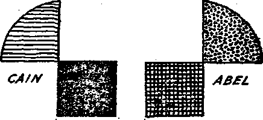

Feb.16,1921, Vol II, No. 37 R3f FaV***«< everg otter ■KM. week at 35 Myrtle Avenue, Brooklyn, Hew York City
*m Onti b Copy— (2.M a Tear Canadt ud Fonisi CowbM .... SUB .
V0LC3H 2 WEDNESDAY, FEBRUARY 16, 1921 NUMB88 37-
CONTENTS o/ the GOLDEN AGE
. LABOR AND ECONOMICS
. __ T, ........ nan Jspentwo Labor end Bco-
SOCIAL AND EDUCATIONAL Japaneoe Education__270 Japaneoe Women —‘
Tipinimi Charaeteriatici 279 Superstitions Dylan
MANUFACTURING and mining ■ Swift and Company Advertising—
FINANCE—COMMERCE—TRANSPORTATION
Japaneoe Transportation 281
Banking and Pawnbroking 283
Changes In Banking—...233
AGRICULTURE AND BUSBANDRY
Discovery of Papago.-____________________________ ...292
HOUSEWIFERY AND HYGIENE Suggestions In Dietetics__J
TRAVEL AND MISCELLANY
Japan's Wqnderful Growth 280 I®, Forei^ Lands—-Beth-The Cains aad Abels—
RELIGION AND PHILOSOPHY
Worship of the Mikado......276 Election and Free Grace...302
Bible Study........301 Juvenile Bible Study.
The Church s Mission.------301 Restitution (poem)
Make remittances to The GoMon Ass.
Volume n
New York, Wednesday, February 16, 1921
Number 37
GOD'S promise of a Messiah that should eventually bear rule over all the earth, conveyed to the Jews, and borne by them into all ’ quarters, has been a distinct blessing to those to whom this message has come in its purity, and a curse to those to whom it has come' in polluted form.
It was this promise of a world-wide king that led Nebuchadnezzar, the Babylonian, to become the first successful aspirant for universal dominion; the same widespread information that brought in Cyrus, the Medo-Persian, as the head of the second world- <empire; Alexander, the Grecian, as the head of the third; and Caesar, and later the Pope, as the head of the fourth. It was this idea of assuming to take the place reserved for Messiah that made the Kaiser aspire similarly, and that caused the ruin of the German . people. Mistaught,, a great and
A YOUNG medical student is supposed to have created, out of materials at hand, a great living organism, unlike any other living thing,which, being rendered furious by cravings which could not be appeased, committed numerous atrocities and finally slew his maker. Will Japan complete the work of destroying Christendom, her maker!
honest people were led to believe that their ruler was in special relationship with the Almighty; and that they, with him, were to be God’s elect “little flock”, rulers over the earth.
This same idea of assuming Messiah’s functions lingers to some extent even in the United States. During the World War Catholic in-quisitorff called upon America’s greatest religious speaker and demanded to know where he would speak on the four succeeding Sundays. Knowing that his own motives and addresses on Bible themes were irreproachable, and not the legitimate concern of meddling politicians, he declined to give the information, advising his interrogators to return to the person who sent them and tell him that it was none of his business. In an awe-struck voice the spokesman said: “But it is the Government that wants to know”. Back came the answer; “Who are the Government! Men, are they not!” This was a revelation to the questioner; but it closed the discussion and illustrates the point, that the Governments of our day are not blessed with “all power in heaven and in earth” and should * not assume it. On the other hand they should be very particular to see that they do not trespass upon or in any way interfere with the things that pertain to God.
With this thought of earth’s false Messiahs in mind, consider the following statement which appeared in Niroku, a Japanese newspaper, and you have the root of the Japanese problem that is now engaging the attention of thoughtful men in every quarter of the globe: .
“The Imperial Family of Japan is as worthy of respect as is God, and is the embodiment of benevolence and justice. The Imperial Family of Japan is parent not only over 60,000,000 people, but of all mankind on earth. In the eyes of the Imperial Family all races are' but one and the same. It stands above all racial considerations. All human disputes, therefore, may be settled in accordance with its immaculate justice. The League of Nations, which is proposed to save mankind < from war, can attain its real object only by placing the Imperial Family of Japan at its head. To attain its object the League must have a strong punitive force of superior national and superior racial character, and this force can only be found in the Imperial Family of Japan.”
As a matter of fact, at the first session of the League of Nations Assembly the Japanese had two or three times as many persons present as had any other nation. Their monopolization of many of Geneva’s hotels and automobiles brought them much notoriety, but the reverse of popularity.
Worship of the Mikado
IT HAS always been a favorite device ef rulers to maintain themselves in power by hornswoggling the people into special reverence for them, but in Japan this goes to the extreme form of actual worship. The imperial family is supposed to have been of divine origin, having landed in Japan about GGO B- C., when the present dynasty came into power.
Every year thousands of the school children of Japan are taken to worship at the shrine of the Mikado: and not only are their school books carefully prepared by the Government to instill into their minds the conviction that the emperor is a god, but the theaters, story-tellers and motion pictures are all utilized to exalt the same idea.
When the crown prince enters the presence of the emperor he is compelled to enter the throne room through a side door and to crawl into the presence of the emperor on his hands and knees. Hirohito, the present crown prince, by the way, is now nineteen years of age and his education will be rounded out in 1921 by a ten-months sight-seeing trip that will embrace the United States, Europe and India. His marriage will occur when he returns.
It would be considered profanation by the Japanese to show the face of their emperor on a eoin. Fifty years ago it was illegal for a citizen to look upon him at all. The emperor helps the program along by making a pilgrimage every little while to one of the shrines of Ise, or dispatches special messengers to pay respects to his ancestors and acquaint them with important affairs of state.
As a ruler the emperor has almost no actual power. The Government is really an oligarchy of Big Business, a group of professional rulers that use the Mikado as a figurehead. In times of famine it is, theoretically, the emperor that comes forward with millions of dollars for the relief of the poor. Always he is set before the people ik thte best of lights. Actually he is a poor olcHnan, ill with diabetes and with weakened mind, unable longer to attend ceremonies nr grant audiences..
Slowly the Japanese masses are emerging
streets, and even then the passage was through
cordons of troops drawn up the length of the
route. Now this suspension has been reduced
to fifteen minutes and the guard is. merely a @ police guard. Occupants of upper floors along S the route, however, must still vacate their « rooms, or close their blinds tightly at such [f times, as no one is allowed to look down upon 0 the emperor, literally or figuratively. . b
Formerly the emperor travelled by special' a train, with the railroad lined on both sides by school children, compelled to stand for hours ' until the train passed. But now, in view of the J very crowded condition of traffic, the emperor's coach is occasionally attached to a regular train l-| and the people need not, as formerly, leave the | station when he alights. This gradual climbing down out j)f the clouds must seem like an odd business to the-Mikado, but he probably figures * j that it is better to climb down than to. fall. । Japanese Education '•
AI THE very time that Germany was giving closest attention to the Kaiser’s claim of
divine right to rule, Germany had the
reputation of having the best schools in the
world. Those schools-were carefully planned to exalt the Kaisei in the minds of the pupils
and to lead them to think that death in his
It is not much wonder, then, that Japanese ruling classes early perceived that the German
educational system was best adapted to their
scheme of rulership; and as the Japanese are d the most perfect of imitators they have built ' j up a system, after German models, designed to 1 do for Japanese youths exactly what German | education did for German youths. .
In the first seven books which the Japanese child uses in his studies there is but one refer- '’ ence to any foreign country, and that is an uncomplimentary, one. Uniformity of thought is w aimed at in art, literature, religion and polities, J j and that uniformity must be in line with the r'-j Government's ideas. (America has had some of ' t that in late years, too; so do’not become too much excited over the way the poor Japanese H have been hoodwinked) Multitudes of the child-
\ ren have been led to believe, and do believe, that the electric light, steamboat and street car are all Japanese inventions which have been copied
; by foreigners.
. As students the Japanese are famous for their industry and ability. When at school, in their own country or abroad, they never allow \ athletics or social affairs to come between them and their studies.
When a Japanese boy goes away to school in America or Europe he is conducted to the rail. way station by all his relatives and all their ' friends and acquaintances, and they bestow ’ presents upon him according to their means and their intimacy of acquaintance. When he returns, the youth must remember each of these gifts appropriately, and woe betide him if the return gifts omit anybody or fail of substan-i tially equalling in value those which he received | at departure.
As missionary efforts in all eastern countries are largely along the lines of secular education, the Japanese apparently concluded that in some way the uniting of religion and education made _ .. for the prosperity of the white races, and have i attempted, as in other lines, to steal the white
■ man's thunder. They have done this, in part,
by printing Buddhist "Bibles”, many passages in which are copied from the Holy Scriptures, with the name "Buddha” inserted in place of » the name "Jesus”. Little children are also taught to sing, “Buddha loves me, this I know”, etc., in place of "Jesus loves me, this I know, for the Bible tells me so”.
Once each year, in August, the Japanese have a feast in honor of the devil. At that time everything is done to propitiate him, so as to induce him to favor relatives who are supposedly already in hell, as well as to make him good humored toward themselves when they arrive.
As in America, so in Japan there is a press, 1 engaged^in doing about the same class of work i that the American press did during the war. Many of these papers are largely devoted to fanning resentment against whatever people the Government is at the time fighting or planning to figlit. There is a censorship, always in ’ operation, controlling incoming and outgoing news to suit the purposes of the hour.
Under the guise of the governmentally-fostered "religions” scheme, called Shintoism (ancestor-worship), numerous priests who have become enamored of Bolshevism are now discussing economic questions in a way that causes the Japanese financial powers great alarm. Under the cloak of loyalty to the imperial house this new cult, called Omotokyo, is making great inroads among the officers and men of the army, especially the reservists; and present laws are such that the Government cannot conveniently interfere. '
Such doctrines, if taught by politicians, would be stopped; but the priests are not so easy to handle. They find ready converts among students and farmers who do not own the land they till. Collections are taken up "for God”, and the money is spent for advertising space in the press, so that the new doctrines may be more widely spread.
Japanese Militarism .
APOLOGISTS point out that, in the twenty-five hundred years in which it has existed as an empire, Japan has engaged in only three foreign wars, all of which have been within the last thirty years; and that for two hundred years before Commodore Perry opened Japan to intercourse with other nations, in 1853, she had not had any kind of war, civil or foreign. - However, this does not change the fact that the ancient heroes of Japan, the Samurai, so-called, were all militarists, supposedly mighty with the sword.
As was somewhat similarly the case in Germany, it is still the rule in Japan, that the toys of the boy babies are military toys, tiny swords, spears, bows and arrows, sold on certain days at certain shrines as a part of the "worship”; and the boys wear caps of military form to impress upon them the idea that when they grow up they are to be soldiers of the Mikado, fighting for the Japanese variety of the "Me und Gott” swindle.
Japan has been under military instruction since 1870, and is saturated with the philosophy of "Kultur” that “might makes right”. During the war, although they drove the Germans out of Kiao Chau in accordance with their treaty with Great Britain, the people as a whole were fully in sympathy with Germany and fully expected her to win the war. While in Japan, the German prisoners of war were treated with
marked consideration, and when the German flag was again recently raised over the Yokohama consulate there was a public celebration of large proportions.
As was the case in Germany, so in Japan, there is an overbearing military caste, bent on committing the nation to great foreign undertakings. The men in charge of this machine are not, as was the Kaiser, ordained ministers in the Lutheran Church, nor in any church. They accept none of the principles of the Christian religion and literally fear neither God, man, nor the devil. They admire frightfulness, too.
As was the case in Germany, so in Japan, there is universal conscription (the only country on the Pacific practising conscription, moreover) and there is the same theory that once a citizen of the fatherland always a citizen. If a Japanese living outside of Japan, China, or Siberia, returns to Japan and remains over thirty days he may be conscripted for immediate military service if less than 37 years old. Wherever he goes he is still a Japanese citizen, registered and card indexed, and subject to the 'call of the Mikado.
As was the case in Germany, so in Japan, the sword ciankers have been everywhere. It is scarcely a year since railway officials' and station-masters ceased wearing swords, and military men keep coming and going constantly.
Among the great masses of the people is the settled conviction (due to belief in the military teachers and the successful prosecution of wars against China, Russia and Germany) that Japan holds the place she has among the nations because of her capacity for war. This is literally true. The hyenas masquerading as Christian nations have all shown by their acts that their chief reliance is not upon God but upon force, and this applies all the way down from Great Britain with her mighty battleships to the Pope with his machine-gun battalion of Swiss Guards.
Japan’s Mighty Navy
AVING the conviction that there is no future for a Japan that does not possess a powerful fleet, and having a defenseless coast line of seven thousand miles in the islands which constitutffiher possessions, Japan has created a navy that makes her now the third maritime power of the world. Great Britain'comes first with 846 ships; the United States second with 560; and Japan has 332, now considerably more than France.
Shipbuilders concede that no nation in the world can surpass the Japanese in shipbuilding, their record of building and delivering the Kai-fuku Maru, of 5,800 tons, in twenty-nine days, having been approached only by the next best record, that of a Michigan shipbuilding firm, which constructed a vessel of less than half the size in the same number of days.
Japan has the most powerful and the most expensive battleship in the world, the Muts costing $40,000,000. She has completed, or nearly so, sixteen battleships each one of which will carry main batteries exceeding twelve inches in calibre. Some of these ships have as many as ten sixteen-inch guns on them. The Japanese know how to use them, too, as they showed in the quick disposition which they made of the Russian fleet twenty years ago.
Japan’s budget for 1921-1922 amounted to $781,000,000, of which $321,000,000 is for the navy, $122,500,000 for the army, and the balance, 44 percent, is for other purposes. Concerning the army estimate, the New York Times for November 25, 1920, said that it showed a decrease of $5,000,000 from the current military budget, and two days later, that it represented an increase of 50 percent. This is characteristic of news from Japan. - •
One who would judge the meaning of news from Japan must read the various contradictory statements, and then judge from past performances what is most reasonable to believe and to expect. Baron Sadakichi Kato. Chief of the Japanese Naval Board of Education, recently said that Japan cannot continue her naval expansion, being unable to _hnild more than the eight capital ships author!zed by the last regular Diet; while Viscount Ishii, at the League of Nations Assembly, Geneve., December 11, 1920, made the statement that Japan will continue the expansion of her navy until the United States reduces its naval program.
Militarism is said to be much less popular with the common people in Japan than it was some years ago. The defeat of Germany was a setback for the militarists, and popular sentiment is against the extensive use of the Japanese army on the Asiatic continent. Applications for admission to the officers' training schools have also fallen off materially.
Nevertheless, the mass of the people are still with the militarists; and the General Staff can and does undertake operations without the consent or even the knowledge of the Premier, so that his most solemn promise on any subject affecting their movements counts for no more than did their own lightly-held promises. '
Years ago, foreseeing the partial awakening of the people, the military party of Japan had the ministers of War and Navy made responsible, not to the Premier, but directly to the emperor, or those who represent him, so that any criticism of either army or navy becomes a criticism of the emperor and thus of God—a long-headed scheme to continue the time-hon-. ored policy of Satan to make independent thinkers guilty of blasphemy and sedition.
Japanese Liberties
THE Japanese constitution is modeled after the German constitution; and Japan has therefore a restricted franchise, the same as had Germany. Only the payers of taxes may vote, and these constitute only about 3,500,000, or six percent of the population. Several attempts at universal suffrage have failed; and will continue to fail as long as the military and ruling classes persist in following in the way to ruin trod by the German, Austrian and Russian monarchies. .
The present regime is the most liberal that Japan has ever enjoyed, but it still leaves much to be desired by foreigners; No foreigner may open a law office in Japan, although there are Japanese barristers in America and Great Britain. No foreign ships are allowed to carry passengers or freight between ports of Japan, although Japanese boats ply between the ports of other nations; and a foreigner in Japan may not eVfen own a motor boat in his own name.
Japanese Characteristics
THE Japanese while in many respects the most remarkable people in the world are, like all other Aembers of our fallen race, full of inconsistencies. They have no swear-words in their language, and seldom give vent to words of anger or irritation; yet they have shown that they can lie extremely vindictive and cruel.
There has not been a holdup in the streets of __ Tokio in twenty years; and yet suicide is so common that a few years ago it became necessary to drain a lake in Kobe, because of the immense number of people who had drowned 6 themselves in its waters.
Bape is never known in Japan, but fathers . ;
will rent their daughters to foreigners or others 'i as temporary wives; and in connection with the houses of ill-fame, which are officially recognized or permitted by the Government, the girl , inmates are displayed in cages to facilitate selections.
The Japan Chronicle reports that in the Si- s berian campaign the Japanese on one occasion ' politely requested and accepted as a favor the ' use of a wireless station from which they sent out instruction how to destroy the very people 1 whose hospitality they were then enjoying. i
A Japanese has by instinct a natural aversion to saying anything that he thinks will be disa- ’ greeable to the hearer; and yet he has succeeded j in a brief time in getting himself disliked throughout Asia, Australia and America by a $ series of acts which have seemed to those ; peoples disagreeable in the extreme. .
The Japanese are the greatest laughter-lov- ' ।
ing people of Asia, and yet .their inability to ■ appreciate humor has been noted by all observers. They are docile in the extreme, and , yet they have no regard for patents, copy- ■ ’
rights, or anything else that they can imitate. * They are great manufacturers and merchants but are said to have lost many customers in Eastern Asia by making and selling inferior < fabrics, loosely woven and loaded with paste to simulate heavy, durable goods.
Japanese fathers and mothers do not kiss . their children, and yet there is no land where the obedience of children to parents is more . marked or where ancestor worship has gone to greater lengths. They are severely anti-foreign, ' and yet they take instinctively to Western dress and ways.
The Japanese are so industrious and frugal ‘ that the average American cannot compete with them. Japan has no tramps, no drunkards, no bomb throwers, no mob organizers. As a ■ people, the Japanese are proud, sensitive, cleanly, hospitable and ambitious.
Although they occasionally get into trouble , for gambling and fighting among themselves; yet they are never found implicated in thefts or robberies. They have great loyalty to rulers and give the ruling classes very little trouble in any quarter of the globe. They are one of the most self-reliant peoples in the world, and regard themselves as superior to any other humans.
Japan** Wonderful Growth ,
ONE of the men who were with Commodore
Perry when Japan was brought into thefam-ily of nations has just died, and there are plenty of men now living who can remember when the Nipponese islands were cut off from all outside intercourse. It was only twenty-one years ago, in 1899. that the Japanese were first permitted to try foreigners in their own courts.
Here is a land that is practically ■without homes, in the sense in which Westerners understand the term. The houses are without solid walls, ceilings, doors or windows, tables or chairs, beds or cookstoves, pots or pans. The people get along without boots or shoes and without bread. Rice and fish are the food, and mats suffice for beds. There are no “home fires burning", and in the winter the people suffer terribly with the cold.
Here is a country that jumped at one moment from barbarism to civilization. Is it any, wonder that they still have something to learn, or that they have absorbed all too well the hypocrisies for which the Christian people of this age will some day be noted when the weight of their armaments is balanced against the brotherly love they have claimed in Christ's name?
The total area of Japan proper (excluding Koeed and Formosa) is a little less than the state of California. It is about one-half the area of that part of the United States north of the Ohio and Potomac Rivers and east of the Mississippi. Yet in-that area 57,150,000 people find th>ir maintenance, or one-tenth more than the American population of the whole area mentioned.
. On account of the mountainous nature of the country, qnly pne-seventh of the superficial area of Japan is susceptible of cultivation: yet more than 30.0(1)-,000 of the people are engaged in farming, and the farms have steadily shrunk until they average less than three acres each.
The Japanese population is increasing at the
rate of 700,000 per year; so here we have a density of population of about 2,688 per square , mile of cultivable land, a condition unlike that to be found elsewhere in the world, the in- . habitants obtaining their food from about one-quarter of an acre per capita. , ■
Japan’s density of population as compared with her total area is surpassed by England, . Belgium and Holland, but there is very little . 1 land in any of these countries that caunot be cultivated. Her first census took place on October 1, 1920. Many of the citizens were much perturbed at this, not understanding clearly its significance.
Japanese Industries ?
IN A very brief time Japan has become one of the great manufacturing countries of the world. She has a few very large corporations which combine banking, shipping, mining, manufacturing and continental exploitation in their activities. These, with the army and navy, " , really constitute the government. Thus Big -I Business, with a few men, operates the government and controls the people? . .•
There are a half-dozen large steel works in ’ .
Japan, the principal one being a government , plant employing 15,000 men. This plant produces about 400,000 tons per year, and all other ’ plants together about 600,000 tons more. This is a large output, especially when one considers the shortness of the time that Japan has been engaged in the iron business. The ore for these works is almost all imported from China and Manchuria. ■
The number of persons employed in all ; branches of the electric industry in Japan is over 30,000. The profits in this line of business and in all other lines were very large during the war. In 1918 the average dividend of the thirtv-three cotton spinning companies for the first six months was 50.27 percent, or at the rate of 100 percent per year; and although the growth the previous year had been very great, yet in the year 1918 the total number of factories of all kinds in Tokio doubled. The exports of the United States to Japan increased twelvefold from 1909 to 1919.
The war caused Japan to produce at home many things which she formerly imported, thereby greatly stimulating her development.
Oue of her great steamship companies, the Nippon Yusen Kaisha (Japanese Mail Steamship Company) has vessels running to most of the principal ports of the world, and distributed in 1919 dividends of 100 percent, of which 50 percent was in cash and 50 percent in stock.
The wave of prosperity caused by the war made many Asiatic and African millionaires, hundreds or' whom came to Europe after the ■war to spend their money. They seem especially, to have made Germany their objective, perhaps thinking thus to participate further in some of the business which Germany has lost.
Japan is up to the minute in mining, electrical, photographic and surgical ’work. She has a wireless station that sends and receives messages direct to and from Germany, and is able to communicate with Buenos Aires.
Japanese Labor and Economics
THERE is a great deal of poverty in the large cities and much discontent. In the last five years the cost of living has risen approximately three hundred percent. Rice costs twelve times what it did thirty years ago and three times what it did at the outbreak of the war.
The standard of living is rising, accompanied by the usual resistance of those who would like to continue to earn 100 percent dividends on their investments every year. In the country districts, peasant proprietorship is on the wane and absentee landownership is on the increase. It seems strange to read of two thousand indignant citizens raiding the residences of directors of an electric light company as a protest against an unwarranted increase in electric light rates. In America, instead of raiding such men, we put their names and their pictures on the front pages of the newspapers arid send them to Congress as patriots and saversSjf the nation.
Wages in Japan, even in the face of the 100 percent dividends, remain, for the most part, far- below $1 per day. Carpenters receive 65 cents to $,1.25, per day: laborers 50 cents to 75 cents. Agd the labor, although cheap in price, is said in American financial papers to lie poor in quality. It is claimed that machinery made for Japan has to be virtually "fool-proof”.
The factory laws, modeled after some of those in effect in Western countries, are said to have been enacted merely to enable the Japanese to explain to visitors what their laws are. The operation of these laws was postponed by legislation until 1931, twelve years after their passage, to give time for ‘adjustment” of capital and labor. .
Cotton mill operatives have been working twelve-hour shifts, recently reduced somewhat. The mill supplies bed and board, paying, additionally, a maximum of about fifty cents per day. Of these operatives, 43.7 percent receive less than twenty-five cents per day.
Until 1919 the right of labor to organize was denied by the Government, and strikes can be and sometimes are checked by the police; but labor is becoming more restless, alert, aggressive and determined. In 1914 there were fifty strikes, in 1918 there were four hundred and seventeen, in 1919 there were over a thousand, and in 1920 there were still more. •
In one of these strikes the street-car employes of Tokio secured a six-hour day. In that strike, and in others, the strikers reported for work, but operated every machine as slowly and inefficiently as possible until their demands were" granted. In some cases they have demanded the right to elect and to discharge foremen. Strange news, strange world.
Japanese 7ransportation
S WILL be hereafter shown, the Japanese are doing some migrating, but they are essentially a non-migratory people. The people wish to live and work in Japan, and in the warmer islands belonging to her. One large island in the group. Hokkaido, with a climate about the same at that of New England, is quite sparsely populated, owing to the fact that the people do not like to live there during winter.
These conditions make Japan a manufacturing and, of necessity, an importing nation, but though she can make steel, and is making it in large quantities, yet at present it can be purchased more cheaply in America than it can be made at home. Japan has hardly any iron of her own, and the coal is of inferior quality. Her basis of supply for both coal and iron is and must he China and China’s neighbors to the north. This means that the coal and ores must be imported, and they cannot be imported without ships.
Japan has no cotton or wool or hides or oil. All of these must be imported. In this respect she is in the same position in the Orient that Great Britain is in the Occident, but is without the raw materials that gave Britain a start, and is without other of the things that make for efficient industrial life.
Japan needs to develop good roads, needs many more trolley lines, and has a railroad system that is utterly inadequate to her needs. At present there are barely six thousand miles of railway in the empire; but the roads are being extended and modernized, so as to enable them to handle the traffic they must bear.
Along with all the other demands on the transportation systems is that of handling great quantities of building materials for the modern buildings, constructed after the Western manner, which are driving out the old wooden and paper buildings of the Japan of yesterday.
Ship captains complain that in Japanese ports the officials deliberately delay foreign vessels, while all Japanese ships are promptly handled. This is no way to build up a permanent commerce. Letters posted to people in the vicinity often take days or weeks to deliver. Telephones can hardly be secured at all, many firms having waited years for installations.
Japanese Women
THE condition of women in the Orient is gradually improving. Many Japanese women are engaging in business as clerks, stenographers and saleswomen. Many of them, too, are now turning up their noses at cotton and are demanding silk kimonos and silk stockings, while the men demand the latest Broadway styles. All the bus lines in Tckio are served by women conductresses.
Two hundred thousand young girls a year are brought from the country into the textile factories. It is estimated that only eighty thou-sandSif these ever return to the paternal roof, quite a few with consumption, due to long hours and insufficient food. Of the female workers in the textile factories, 15 percent are under 15 years of age, 42 percent are between the ages of 15 and 20, and 43 percent over 20 years of age.
Japanese men are supposed to be very polite, but are reported as not hesitating to crowd working girls off the sidewalks, though they think more of their own women folk than of the women of other races and nationalities, and seldom marry white women or vice versa.
A poster published by women in Japan asks husbands to get up at the same time as wives; not to scold wives in the presence of visitors or children; to let wives know when they leave home, where they go, and when they will return; to fix sums for wives’ personal use; to refrain from demanding services which they can perform for themselves; to avoid setting children a bad example; to allow wives certain hours for reading and studying, and to avoid calling wives disrespectful names. The attention of American husbands is called to these suggestions. They will bear study. '
It has always been the custom in Japan for both sexes to bathe together, naked, in public. When the attention of Japanese statesmen was called to the fact that Western visitors considered this scandalous, the matter was rectified by compelling the males to bathe on one side of a rope and the females on the other; that was all.
Japanese Finance
JAPANESE achievements in finance have been remarkable. In one year they switched over from the silver standard to the gold standard. They have a western banking system. The total registered capital of all banks and corporations at the end of last May amounted to $6,133,475,000, or more than three times what it was in 1916. They have redeemed their external debt and are now able to lend large sums to the old world. They have large cash deposits in America, including investments in U.S. bonds.
Japan recently had a severe financial pinch, in April, 1920, caused by a coterie of New York bankers suddenly calling huge loans that had been made to silk exporters^ As a result, the price of silk fell from $18 to $9 per pound, there were many-bankruptcies, and one bank failure, But conditions are as good there now as anywhere—which is not saying very much.
When the pinch came, thousands of tons of American goods, worth millions of dollars, were compelled to accumulate in the warehouses because the consignees could not accept them. Piers and lighters were filled with them, and the storehouses in the interior of the country were in the same condition.
(To he continued) .
E ABLY in 1920 the Security National Bank of Dallas loaned $55 (presumably on a $55 note and at 6 percent per annum), to two girls of Koppell, Texas, respectively 11 and 13 years of age, for the purchase of a hog. During the season the girls raised a family of porkers, expended $66 more for feed, and at the end of the season disposed of their brood for $418.50. AU can see that in this transaction the supplying of the hog and its feed were necessary parts of the production of the bacon. The supplying of this money to these girls was banking in one of its simplest, most helpful forms. It is such an act as any prosperous farmer in the neighborhood who had confidence in the girls might have performed.
If the bank above named, not knowing of the reliability of the two girls, and not taking the pains to inform themselves, and not sufficiently acquainted with the possibility of making money out of pork, had required a chattel mortgage on the hog and its family before lending -the money, the transaction would have been pawnbroking. In the banking business in the United States there are some bankers and some pawnbrokers. A real banker is a blessing to his community; but a man in the banking business who has the instincts of a pawnbroker is a curse to his community, because he takes the place of somebody who would be a help to it. The banker ' builds; the pawnbroker posing as a banker, discourages and defeats the whole community.
There would be comparatively little poverty and shiftlessness in any country if the poor boy or girl or man or woman in need of education or of tools or hog or cow or horse or of other simple foundation for making money could obtain credit to secure it; and the supplying of such capital is the proper work of a bank. Every person who is honest, as these girls were honest, industrious as they were industrious, and who has some good judgment, as they must have had good judgment, has a foundation for credit with a real banker.' '
Not all 0$ the hankers of Texas are as helpful as the Security National Bank of Dallas appears to have been in this instance, but some of them have done a pawnhroking business such as would cause a decent pawnbroker to hang his head for shame. The Comptroller of the Currency sets this out in the following paragraph in his report for the year 1915:
“Of 105 loans reported in Texas, 71 bore interest at 25 percent, and 4 were at 100 percent. Ln one instance it reached 514 percent; while on 29 loans investigated, the interest ranged from 36 percent to 2,000 percent per annum. One Oklahoma bank reported 184 loans at rates exceeding 150 percent, of which 75 were at rates exceeding 300 percent. Thirty-three borrowers paid interest charges of 500 percent or more.”
What honest man can read that paragraph without having his cheeks burn with indignation at the thieves that have imposed such burdens upon honest men! Thousands of farms in Oklahoma which rightfully belong to those who planned to make them into permanent homes -have come into possession of banks, owing to the ruinous rates of 55 percent to 100 percent interest, exacted by those banks. Moreover, it is claimed that men who fight against such a fraudulent system in Oklahoma are sure to be ruined politically; for there are enough such banks, and they stand so firmly together, that no one. man can fight them successfully.
The cities have suffered in the same way as the country, and from the same cause; namely, the difficulty which honest, capable men experience in trying to secure reasonable credit at reasonable terms. A study of the loan sharks of New York city, made by the Russell Sage Foundation, showed that interest rates ran as high as 280 percent, 300 percent and 329 percent per annum. The books of one of these concerns showed a profit of 28 percent in one month. The men to whom these loans were made were admitted by the money-lenders themselves to he almost all honest, industrious men, in temporary need of money because of sickness or death in the family. They needed urgently the aid of a good banker, and fell into the hands of thieves. The conditions under which they were compelled to borrow were such as t > drive some of these men to desperation, destroy their homes and turn them into vagalxmds.
Changes in Banking ■
RIOR to 1862 all banks were State banks, and almost exclusively local in <Irnir operations. It was the purpose of ail these hanks, and should still be the purpose of all of them, to aid men to produce wealth, distribute it to market and convert labor into capital. But in sixty years there have been vast changes in all lines of industry, and in no line has this been more pronounced than in banking. Indeed, many of these changes originated with the banks themselves.
For example, it was the banks of New York that organized and brought into being virtually all the great trusts and monopolies of the country. At first these great combinations were largely manipulated by the savings of the people invested in the great insurance companies (the straggle for the financial control of which made such an interesting story in the history of our country some years ago) and were supported by additional savings of the people withdrawn from country banks for the purpose.
The method of procedure was simple. It was merely pawnbroking on a huge scale. Here is a property worth $200,000,000. That is all it would cost to create it new. This property is earning large sums and may be manipulated so as to earn even greater sums. Let us buy it at $200,000,000 and give it a new name, get up some beautifully engraved “bonds” and stocks and sell it in small lots to bondholders and stockholders for $1,000,000,000. We will get our $200,000,000 in cash from the insurance companies and country banks by offering them a reasonable share of the profits on the transaction. The country banks will make more by going along with us than they will by helping people to raise hogs and otherwise to build up the interests of the local communities where they are. Perhaps, if we get $50,000,000 of this amount from the country banks, we may let them have back $100,000,000 in stocks and bonds of the new trust.
Such might be the method of reasoning adoptecb-by the organizers of some of these monopolies. They seem not to consider what a great injustice is done to the country as a whole; and this thing has been going on for thirty years or mpre., The country district has put up $50,000,000 in cash, and gets back stock and bonds whicl cost the trust organizer $20,000,000. Moreover, it has lost the nse of the $50,000,000. It may or may not be satisfied with its returns on the stocks or bonds which eventually find their way into the strong boxes of the bank’s depositors; but it has nevertheless made a present of $30,000,000 to some great trust, at the expense of the local industries, and to the detriment of the whole country.
The effect of methods like these, with scores of modifications, has been to increase and centralize banking power greatly, and to make the common man who helped to create the instrument wonder sometimes what will be the outcome of this thing.
Banking Power
THE banking power of the United States is now nearly $46,000,000,000, or about nine times what it was in 1890, and three times the estimated banking power of the world in that year. It should be explained, however, that much of this enormous gain in bank resources is the outcome of the national bond issues and of the inflation based thereon, and is not wholly an actual gain in the nation’s wealth.
In the six years ending December 31, 1919, the national banks grew more than in the fifty-one years previously, their increase in that time amounting to 101 percent. Within this period-the resources increased in this class of banks from $11,296,355,000 to $22,711,375,000. In the year 1919 one in every six persons in the United States had an account in a national bank, and not one of these persons lost one dollar in such a bank in that year.
The national banks were first started in 1862, to help Uncle Sam finance the Civil War. They alone among banks have the power of issuing currency. The State banks used to issue currency, but such currency was taxed out of existence. National banks were encouraged to buy U. S. bonds. Then they could deposit these bonds with the United States Treasurer (drawing interest on them, however) and upon the basis of that collateral could issue currency (upon the issuance of which they also obtained interest). Of course the whole people paid these double interest charges in the end.
The accumulation of wealth in the hands of the banks has placed in their control an engine of almost irresistible power. They are able to break down the credit of any business or of all businesses in the country, to destroy the buying power of the nation, and to lessen its producing power; and this engine is growing in size fast.
On January 1, 1914, twenty-three of the greatest banks in New York city had 4,833 employes and occupied 546,718 square feet of floor space. SLx years later the same banks had 18,607 employes and occupied 1,217,393 square feet of floor space.
Banking Profits .
UNDER present conditions a city bank can hardly fail to be a profitable undertaking if it is managed with even ordinary ability and prudence. In the year 1919 the average earnings of banks the country over was 24 percent on their capitalization. Indeed, the common people cannot but notice the difference between the 3 percent and 4 percent interest which the bank gives Lor the use of the money which the people have saved, and the 24 percent on their capitalization which the bank earns with that same money.
So sure are large profits in a well managed bank that a woman’s bank, started in Clarksville, Tennessee, October 6, 1919, without the men of the town's knowing anything of it beforehand, showed gross earnings of 25 percent in its first year of operation. All the nine directors in this bank are women.
During the year 1919 the capital of twenty-four of New York’s greatest banks was increased from $69,200,000 to $110,920,000, to help them to alworb their profits and reduce their taxes (every hundred thousand dollars increase in capitalization enables the bank to save excess profit tax <m $8,000 of its earnings). Twenty-one of the greatest banks in New York city, ■which dosed the year with capital totalling $123,500,000, made during the year net profits amounting to $50,394,000, or around 70 percent on the capital with which they beyttn the year's work. Subsidiary companies made millions of dollars not included in these figures.
In the capital stock of the national 1 tanks in the United States amounted to $1,137,995,000, and their deposits to $13,809,451,000. Tire statement has appeared in print that their earnings for 4919 were $1,009,000,000, but as the expression ’'‘earnings” is more or less vague, and as the amount named is in round figures, we do not know the value of the statement. If approximately correct it would indicate excessive profits in the national hanks and very meagre profits in the State and private banks to bring the general average to but 24 percent Federal Reserve Banks
THE Federal Reserve Banks were not organized to finance the World War, but if they had been organized for that purpose they could not have served their purpose better; for they centralize in the hands of seven men nearly the whole banking power of the nation. They constitute a series of central hanks.
These banks are in the nature of a "Trust’’ organized by the Government, to aid the member banks of the country to maintain an elastic credit and currency system and to steady credit. The purpose of their organization is to prevent —not to bring on—the business depressions which formerly happened with periodic frequency in the United States, throwing millions out of employment and causing great distress.
The Federal Reserve Bank is, in effect, a Government institution not supposed to be run for profit. There is no reason why it should have any capital at all, and every cent of profit it earns ought to be returned to the Government ; but it does have capital, and it does make money.
During the year 1919 the Federal Reserve Banks operated on a paid-in capital of $87,000,000 and earned on that capitalization $98,000,000. Up to July 30, 1920, the paid-in capital had become $95,225,000; the surplus was then $164,745,000 and the total resources exceeded the total liabilities by $3,264,457,000. The total resources are $6,250,000,000, with direct control over the $22,711,375,000 resources of all the national banks, liesides.
The earnings of the New York branch of the Federal Reserve Bank for the half year ending -June 30, amounted to $24,607,000 on a capitalization of $23,800,000, or at the rate of 208 percent for a full year. This is a pretty good profit for a bank that is not supposed to be run for profit. The bank is forbidden by law to pay more than 6 percent dividends to the hanks which constitute its only stockholders, surplus profits going to the U. S. Treasury. There is an uneasy feeling abroad that the Federal Reserve Bank has Ix-en Inred into “doing those things which it ought not to have done and leaving undone those things which it should have done”.
Depression of Bonds
IF ANT other agency than the Federal Reserve Bank had taken the steps to discourage the sale of Government bonds which that institution has taken, its officers could be haled before a magistrate, tried and sent to prison for a long term of years. (The administration just passing has been noted for the unusual length of its prison terms and for its lack of magnanimity toward the small offender)
The Federal Reserve system destroyed the credit of the Government's own bonds by raising the discount rates on them to 5J percent, . .which is an amc'.'..'.i greater than the interest return on the bends. The people who purchased these bonds found at once that they could not dispose of them except at a loss of 4 percent to 15 percent (Victory and Liberty issues), a total loss to patriotic bondholders estimated by Senator Owen, of Oklahoma, at approximately $3,000,000,000.
It should be remembered that when these Liberty bondholders bought these bonds the banks which handled them and the Government which issued them told the buyers that these were gilt-edged investments which would be likely to advance in price when the war was ended and that they would be the very best of collateral. Is a bond a gilt-edged investment which must be sold at a loss, if at all ?
As to using the Liberty bonds as collateral; first, the banks will lend but 60 percent of face value, if they lend at all; second, the Federal Reserve Board has been urging the banks to get rid of them, i. e., to make the people who subscribed for them finish their payments and take the bonds away or to sell the bonds and pay up the loans. A commendable motive ( the desire to compel the people to save money and to reduce the inflation of the currency) is set forth in extenuation of this.
It is’said with a good deal of satisfaction by some that the Government made $50,000,000 by going into the market and buying Liberty bonds after their value had been depressed; but there is a question if the Government might not better have exn^nde'd $50,000,000 to keep the bonds at par. Indeed, if the Federal Reserve Banks would at oiee loan 44 percent on these bonds they weald again sell at par.
It is surely inconsistent for the Government to redeem its own bonds at less than their face value. To do so is to repudiate partially the bonds, and it serves to indelibly impress upon the minds of the people the thought that neither the word of the banker that sold the bonds nor of the Government that issued them was trustworthy. By consenting to an arrangement of this kind the Government has placed itself in a position where it would now have great difficulty in floating a popular loan, and it surely would not wish to resort to any more strenuous methods for marketing bonds than it used whiles Mr. McAdoo was Secretary of the Treasury.
Boosting of Interest
THE raising of the discount rates on Liberty bonds to more than their legal rate of interest was the signal and the excuse for a general raising of interest rates all over the country. Yet the Federal Reserve system was particularly designed to prevent anything of this kind happening.
With the Government interest rates on bonds what they are, and with the depositor in a savings account receiving what he receives, andr especially with the banks earning 24 percent and upward on the money they have invested, there is surely no just reason for bankers to demand over 6 percent interest; and indeed some bankers have refused to do so. All honor to them.
Under the National Bank Act United States banks are forbidden to charge rates of interest in excess of those permitted by law of state in _ which they are located, and in New York State the legal rate of interest is 6 percent. But Congress has passed a law which enables the Federal Reserve Banks to charge rates to member banks in excess of 7 percent. So here we liave the people forbidden to take usury on the one hand, with institutions of the Government permitted to take it whenever they desire.
During a large part of 1920 the Federal Reserve rate for commercial paper in cities other than New York was fixed at 7 percent, or 1 percent more than the legal New York rate. This meant that the borrower must pay 7$ percent to 8 percent in the open market; and, as a matter of fact, commercial paper was freely quoted in New York city at the usurious rate of 8 percent. This has forced the railroads to pay 7 percent to 8 percent for their loans, the pressure coming back eventually on the passenger and shipper.
No- doubt one motive back of the Federal Reserve Banks in boosting the interest rates was to discourage speculation; but their act has not had much effect in that direction, though it has greatly depressed legitimate business.
The forcing up of interest rates will make a huge eut in the revenues of the nation; for without flourishing business eonditionsthereis bound to be a reduction in income surtaxes and excess profit taxes. Moreover, the indirect effect of such a boost in rates of interest is to reduce the value of every life insurance policy and every savings bank account.
Profiteering by the Federal Reserve Banks set the fashion for other banks, or perhaps was encouraged by them. In any event, in the month of August the Comptroller of the Currency stated that the national banks of New York city were making excessive profits by undue charges on short time loans. These excessive profits were estimated at $180,000 per day, some banks charging the borrowers as high an annual rate ■ as 20 percent interest More pawnbroking.
Restriction of Credit
THE underlying cause of economic distress in war time, and for some time after, is the scarcity of goods, other than war munitions, and the demoralization of production. Prices are high because there is not enough to go around, and the highest bidder gets the goods. Wages are high, and everything that wages will iy is high.
As a consequence of these high wages and the acident high cost of materials it is necessary for manufacturers and farmers to have more credit than in normal times. The natural path follower prices is through increased production, and nqt through a slashing of wages and restriction' of credit. No doubt the high cost of living can be temporarily reduced by a method which will force upon the market what little reserve stock the country has, but to do so is like killing th< goose that lays the golden eggs.
No patriotic statesmen or banker ought to desire to halt prosperity and bring about the suffering and discontent that inevitably follow; yet the Federal Reserve Bank seemed to conclude that this was the best way to reduce living expenses in a campaign year when expenses must, perforce, be reduced.
Under the influence of the Federal Reserve Board, early in 1920, bankers were gradually crowded into a position where they would lend no money for the expansion of production, regardless of security offered. And it is as true of the farming business as of any business that it cannot increase its output if it cannot get the increased capital necessary to function. How then can the cost of living be permanently reduced I
The crops in the great Middle West in 1920 were wonderful in size and condition, but money was almost impossible to obtain. Many bankers regularly call the loans of farmers early, compelling them to sell immediately after the harvest, when the prices are the lowest for the year. Farmers who had enormous crops and wanted to buy threshing machines to turn wheat into money were unable to get even sixtyday accommodations through the banks.
Moreover, with the greatest shortage of homes in history it was next to impossible for a home-builder to make any arrangements with a local bank. If a bank loaned to a home-builder at 6 percent, the Federal Reserve Banks could make the rediscount rate against the loan 7 percent or 8 percent or 9 percent, so that the home bank would become a loser by the transaction; and the bank having become a loser once, what would be the chance of the next home builder’s getting a loan at 6 percent?
Curtailing credits is the sure way to curtail business, and the Manufacturer's Record,’ of Baltimore, than which there is not a more truly patriotic paper in America, made the statement in its issue of June 3,1920, that
“The Federal Reserve Board has already cost this country in depreciation of securities and the halting of business not merely hundreds of millions of dollars, but billions of dollars. It has endangered the whole business structure.”
Methods of Securing Members
THE Federal Reserve Banks would like to have all the banks in the country become members of the system. We do not just know the reason for this, except that it seems a failing of our times that people who already have too much power are never satisfied until they get a little more.
Representative Reavis, of Nebraska, claims that the operation of the Federal Reserve Bank system in Nebraska has brought several small banks of that state to the verge of destruction. Many such banks, which were functioning legitimately in helping the farmers, have failed. He explains that in order to scare small banks into the system, agents of the Federal Reserve have taken as much as $35,000 in checks to a small country bank, in a high-powered automobile, and demanded currency payment of the whole amount at one time, at the point of a revolver. Correspondence schools should get out a course in modern finance; it would read like a blood-and-thunder detective story.
In the month of May representatives of the country banks of twenty-four states complained to Congress that unless something were done to curb the power of the seven men that controlled the Federal Reserve system the banks would be ruined. They are also clamoring for a revision of the Federal Reserve Bank act, claiming that the chief beneficiaries of the system are the wholesalers and jobbers in the larger cities. Nearly a hundred years ago the abuses of the central banking functions by the Bank of the United States caused President Andrew Jackson to terminate the career of that institution.
When a bank loans to customers it does not pay out actual money; it merely grants a credit But real interest is charged upon these credits, and they must be paid back in real money, or the property of the borrower is taken. Thus the interest-bearing debts of the people are pyramided, without increasing the money with which the debts can be paid.
Workers* Credit Unions
THERE are 65,000 farmers’ and laborers’ banks in Europe. These credit unions, as they has been abandoned.
are called, are not aimed to make money for the stockholders, but are run for the sole benefit of borrowers and depositors. They now have a membership of 15,000,000, with annual deposits . and loans amounting to $7,000,000,000.
It is believed that these credit unions have a great fiitiire fti America, as more and more banks depart from their proper office of helping operation in Massachusetts, Rhode Island, New York, North Carolina, South Carolina, Wisconsin, Texas, Utah and Oregon. Loans ■ are made on the personal character and integrity of the borrowers. The shareholders in these banks are usually all known to each other, and each shareholder has the same voting power regardless of the number of shares held.
business to engaging in pawnbroking. Such shall be made to pay these loans, but of course people’s banks have been found to have a great Germany will never be able to pay them all, educational value to those who use them. There and the money is as surely lost as though it had are credit unions and laws governing their been thrown into the sea.
Workers’ banks are being organized in Seattle and by the Amalgamated Clothing Workers of America. The Brotherhood of Locomotive Engineers, in Cleveland, has organized a million >. dollar bank, the stock being limited entirely to . Brotherhood members. This Brotherhood has not had a strike in thirty years, and is said to have a reserve fund of $18,000,000. It is thought that this bank, if successful, will be the first of a chain of banks that will tend to attract the deposits of all union labor men. (
British Banking Items '
IN FEBRUARY, 1920, a noted English banker made the statement: “It has become evident that England will continue to be the banker of the world, although one of her customers will be richer than she”. This statement was probably ” ■ made in view of the fact that at that very time America’s great new banking system, the Federal Reserve, was restricting credits so as to build up a great reserve, while at the same moment the Bank of England, although doing ! much talking about retrenchment was actually 1 decreasing her reserves so that she could build 1 up in other parts of the world businesses such as the policy of the Federal Reserve was tearing down in America.
Many of the Irish banks have shipped their ' gold to Britain, for fear of raids by Sinn Fein. , The plan for the British financing of Persia
All that the United States ever received for the immense fund of $10,000,000,000 loaned to the Allies during the World War was ambassadors’ receipts. Now the suggestion of American bankers that America should receive in return some kind of negotiable paper is said to be treated with expressions of "pain and surprise”.
Of course the hypothesis is that Germany
f TTTE ALL smile with amusement when some VY of the old peculiar beliefs which once had almost universal credence are brought -to our ' attention. Folk-lore societies are becoming a necessity to prevent the sayings of the wise (I) from entering the land of oblivion. In each nationality there are superstitions of different nature. Some common ones which are very ill or already buried are the following:
The crowing of a rooster at the front door or the dropping of a fork meant that a visitor was coming.
A twig catching a young lady's dress meant । a beau.
■ To have the hiccoughs meant that some one was thinking of you, and an itching ear meant
I that some was talking about you.
To open an umbrella in the house or to sweep 'dust out of it meant bad luek to the house.
To turn back after starting meant bad luck; and if a rabbit crossed your path it meant the same.
• ' Two pairs crossing arms when shaking hands - meant that one of the four would get married.
An itching left hand meant you would marry । soon; and if the right one itched you would shake hands with a stranger.
! For a stranger to leave by a different door from entering meant bad luck to the house.
Seeing the new moon over the left shoulder meant one would soon get money.
■ Many are yet suspicious of the number 13 i and particularly if Friday is the 13th day of the • month. These superstitions show us that we are still in the dark ages.
They have not, however, been as costly to the human race as the religious ones which are inspired by the same source. Not so many years ago if We who were Christians met an ugly old woman and later became sick or had some other misfortune we might have accused her of putting a spell on us, and might have caused her to k be arreste^ or bumed at the stake as a witch. L* Although such'views claim support from tradition or tfib Bible they are equally erroneous.
Metal checks or brass checks, with the figure of Mary the mother of Jesus Or with the cross, when hung about the neck, are supposed to be efficacious in protecting against accident or in-
Dying By c. f.
jury. Some man on earth, or one’s money put into his hands* is supposed to have the power to forgive sins.
Other superstitious beliefs are that when a person dies he really becomes more alive than before; and that if bad he immediately enters to remain eternally in an unquenchable, burning chamber; whereas if"he has been good he enters a sphere of eternal blessed idleness. Unless a child is sprinkled in infancy its death will be its doomsday and one of dread and terror.
Socrates was put to death for laughing at the superstitions of the Greeks. Reformers upon reformers, the greatest benefactors of mankind —Huss, Tyndale, Cranmer, Latimer and Ridley, etc.—have tasted death for uncovering the falsehoods of religious superstitions.
In the Golden Age, however, every form'of credulity will have disappeared; for there is nothing covered that shall not be revealed, nor hid that shall not be made known. (Matthew 10:26) Truth alone shall remain.
Suggestions in Dietetics By s. s., Pa. ■
AT not what you "like”, but what is good for you.
Drink water copiously between meals; drink a glass of cool water on rising.
Eat harmoniously; do not drink milk at same meal with vegetables or with acid fruits.
If you have rheumatism, avoid acids. If occasionally using acid, counteract immediately with fats—butter, pure cream, or nuts.
Use nuts with all vegetables. Use the latter uncooked wherever possible; and when cooked they are much more wholesome cooked in their own juices.
Potatoes should practically always be roasted.
It has never been demonstrated that human beings need meat—i. e., the flesh of animals.
One who eats no meat, uses no highly seasoned food, no drugs, and who uses, as far as possible, an uncooked vegetable diet, will have no need of “internal baths”, but will be clean and practically odorless within.
If one find that he is losing flesh, in addition to above one should eat cheese, brown bread (tvhole wheat bread if obtainable), raw eggs beaten up with milk, and roasted potatoes.
WE PBESENT herewith, in order, lour letters which are self-explanatory. The only interest The Golden Age has in matters of this nature is to get before the people "the truth, the whole truth, and nothing but the truth". We strive, as far as lies within us, to be "first pure, then peaceable, gentle, easy of eutreatment, full of mercy and good fruits, without partiality and without hypocrisy”.
Swift & Company,
Union Stock Yards, Chicago, Commercial Research Department
November 30, 1920.
The Editor, The Golden Age,
35 Myrtle Avenue, New York City.
Dear Sir:
In the issue of The Golden Age of October 27th appears an article entitled "'Journalistic Truth Expiring". A paragraph in this article states:
"A bill wa« up before Congress in 1919 for Government regulation of the packing iutlustrr, in the hope that the result might be that in the United Suites we could have our meat j>repared in places eleau aj>d sweet ami free from odors. To defeat this bill Swift & Company alone spent a million dollars a month upon newspaper advertising, effectively closing the ciiaanel by which the people should have known rite truth.”
Referring to your statement that Swift A Company spent a million dollars a month upon advertising, we '.visit to say that this is absolutely untrue. The expenditures of Swift <fc Company for the last three years (1918-1919-1520) have averaged considerably less than $2,-<■0'0.000 per year. Furthermore, this amount including not only our educational advertising but our product advertising as well, amounts to less than one-sixth of one percent on sales.
As to the reference that the hope of the legislature in Congress was to make it possible for the public to have its meat prepared in places clean and street and free from odors, it is very apparent the person who wrote this -tatrment is entirely unacquainted with the conduct of the meat-packing industry under federal inspection. All plants of Swift <k Company are under strict federal in-■'ection and must be kept in the very highest sanitary condition, and no meat for edible purposes can leave our planfs unless it has passed rigid inspection by the ixiierts of'the federal government. No law providing lor any change in sanitary conditions is or has been
• i ei’ore Congress.
We shall appreciate it if you will publish this letter in the colnn\ns of. your paper and shall be glad to receive a copy of the issue in which it appears.
Very truly yours,
Swift & Company
Per L. D. H. Weld. Manager, Commercial Research Department n.
The Golden Age
December 21, 1930
Chicago, Illinois.
Gentlemen: Attention Mr. Weld. Mgr. Con.
Research Department
erroneous statements which have appeared in our col- '
umns. When the correction appears you will be sent copies of the article.
Very truly yours,
The Golden Age
The Golden Age
December 21, 1920
Mr. Upton Sinclair,
Pasadena, California,
Dear Mr. Sinclair:
Enclosed please find letter from Swift & Company, dated November 30. We presume you will be glad to give us an independent article which would look nice if printed in a parallel column opposite Swift & Company's letter.
Hoping to hear from you, with the return of the letter from Swift & Company, we are, with kind regards^
Yours very truly,
The Golden Age
Upton Sinclair
Pasadena, California
December 27, 1920
The Golden Ace.
Brooklyn, New York.
Dear Sirs:
I have your letter of December 21st, enclosing the letter of Swift and Company, signed by its Commercial ,-p Research Department. I am wondering if the salaries of this Commercial Research Department are charged up on the books of Swift and Company among its expenditures for advertising!
>
All the facts concerning the expenditures of the Chicago packers for advertising are contained in two volumes of Senate document 5305, Sixty-Fifth Congress, Third Session, entitled, “Government Control of the Meat-Packing Industry". I went through these volumes very carefully at the time I was writing the “Brass Check”. Unfortunately I did not mark the documents, and the pressure on my time is such that I cannot now undertake to go through nearly three thousand pages of closely printed material. You may take my word for it, however, that I have made no statement in “The Brass Check" on this subject which is not taken directly from this testimony. Most of it was taken from the report of Francis J. Heney, who had access to all the books of the packers, and made a thorough study of the activities of their lobby. I would suggest that your readers might be interested in further details on this subject, which was very largely suppressed by the capitalistic press of the country. Get a copy of these documents and go over them, and you will find rare and wonderful material: the suppression of evidence, the stealing of books, every kind of effort to block the investigations of the government.
The fates are kind to me! I had got this far in dictating my letter, and while I was doing it, was carelessly turning over the three thousand pages of these government documents. My eye lighted on the word “ad' vertising”, and I read a few sentences, and behold it was the very evidence for which you have asked me! Volume 1, page 55, Francis J. Heney is testifying, and I will quote you his words: »
“Armour spent in 1915, as I recall It, about .'5250,000. In 1916, In line with this educational campaign, as suggested by this program. Armour & Co. spent about $650,000 for advertising. In January cf 1917 or February 1917 President Wilson directed the Federal Trade Commission to make this investigation; and in 1917 my recollection is that Armour had spent about S'JaO.OOO for advertising; and then at about the time I concluded my work in connection with tills, I learned from the expert accountants who were on the books that Swift & Co., from the time we commenced our public hearings In December, had been spending on the average of about $1,000,009 a month for advertising.
“Senator Norris: A million a month?
“Mr. Heney: A million a month. I do not know what Armour was spending.
“Senator Kendrick: Mt. Heney, let me ask you a question these: Do you have information as to whether or not this expenditure is allowed as a part of the legitimate expense in the collection of the Government as to income tax?
“Mr. Heney: I think it is. But I have no definite information; that is my understanding from what I can gather.....\ ;
“Senator Kendrick: I will ask you a question: Is it not true that a Skeut deal of this advertising is for other purposes than for making sales of the products of the packers?
"Mr. Heney: The advertising is not for the purpose of making sales at all. a very considerable part of it. because it contains no information on the subject. It is obviously for the purpose of creating public sentiment In favor of the packers, of educating the public to believe the packers’ propaganda, as to how economical they are and what a greet saving their methods have brought about for the consumer, that he is getting things cheaper than he would get them otherwise.
“Senator Kendrick: Then, If this expense Is In any way effective, it Is by an indirect method, to say the least?
"Mr. Heney: Tee.
"Senator Norris: Mr. Heney, are you able to say what kind of publications were advertised In?
"Mr. Heney: Why, yes.
"Senator Norris: Are there any publications In which they did not advertise?
"Mr. Heney: I made some Investigations In California, while I was there, after AprlL I made some, considerable Investigation, and as a result of It I think I am safe In stating that every newspaper tn the State of California—dally, weekly, biweekly, triweekly, or monthly—was given advertisement by one or more of the five big packers; and in no Instance that I discovered did the packer ask for any redaction off the regular rate; they merely sent the advertisement, and said to run it, and then paid the bill.
“Senator Norris: I was wondering If you had made an investigation. I made one pertaining to my State in the country papers and daily newspapers, and also In respect of the New York papers, that I saw, and I Instructed my secretary to examine all the papers that come to my office and ascertain If there were any that should not contain these large display advertisements of the packers, but I was unable to find a paper—there are none that came to me that I have been able to And that failed to contain them, and I was wondering If that covered the entire United States.
“Mr. Heney: Yes: I think It did. And I found on their files letters written In 1916, where either Armour and Swift representative wrote up and said that they bad not given the Scripps paper at Dallas the ad; they did not know whether It was worth while, because the policy of the Scripps papers all over the United States was against the packers, but they supposed they might as well give it to them anyhow. And other letters in the files show very clearly that the purpose was to Influence the newspapers to omit the publishing of Information In regard to them, such ns reports of the Federal Trade Commission, and to Influence editorials their way.”
And then a little later on in the testimony, occurs the following:
“Senator Norris: Can you tell us how much In the last year, for Instance, all of the five packers spent In their advertising propaganda?
“Mr. Heney: No, Senator, I can not. That was one of the things which I requested the packers to furnish us data on, before I quit the Investigation. It Is possible that the expert for the Federal Trade Commission, who has been acting ns expert for the Food Administration also, Mr. Chase, who is here in Washington at the Federal Trade Commission, can give you that information.”
With regard to the second item discussed by Swift and Company, the wholesome packing of meat, I do not have to take so much of your space. I can simply refer the reader to “The Brass Check”, to the chapter entitled “The Last Act”. This tells how a year subsequent to the publication of "The Jungle”, the “New York Herald” made an independent investigation of conditions in Packing-town and found them worse than ever; and
- how the “New York Herald”, and every other capitalist newspaj>er in America, .-uvc one, entirely suppressed this news. At this time, you understand, the Chicago packers were carrying on an elaborate campaign to make the public believe that all the evils reported in “The .Tangle” had been remedied. They are still carrying on this campaign, and all the information which eontes to me leads me to believe that it is just as true today as it was at the time of the “Herald’s” investigation—or as it was wht-n "The Jungle” was published, and when the packers were all declaring that there were no evils to be remedied.
Do you know the story of the lawyer whose client was accused of borrowing a kettle and returning it cracked? Said the lawyer, •'Your Honor, we shall prove three things: First, the kettle was whole when we returned it; second, it was cracked when we got it; and third, we never had the kettle at all.”
Sincerely,
Upton Sinclair.
The League is Our Graveyard By j. l. need
WITHOUT the consent of our Congress or the American people, supported by neither moral justice nor the National Constitution, the President of the United States left our shores, made his way to Europe, and there behind closed doors agreed to bind this country hand and foot to an unholy alliance, the provisions of which kill our National Constitution, throw away the Declaration of Independence, render ns helpless by destroying our national independence. and destroy the hope of the world.
by binding us to support its present govern- drought-resisting and especially valuable for
merits and to fight any and all efforts to set up a form of government in the interest of all the people, with sjiecial privilege to none.
We are even now helping to place a czar back on the thmne, and financiers, ecclesiastics and politicians seek to hind us to the bargain. We are morally Ixmnd to support justice, but secret treaties are not based on justice, and therefore we are under no moral obligation to hind otftselves or pledge our support to the great powers of Europe.
The robber who would desert his companions, after agreeing to rob some helpless widow, would not thereby connnit a moral wrong. He would violate nd law of justice in thus turning from his accomplices.
We are now helping to prevent the Russian people from setting up a government of their choice; and if we become a full-fledged member of the League of Nations, we shall be forced to go the limit in men and means and to turn this earth into a veritable hell.
How can we explain to ourselves that it is our duty to give up our independence and our right of self-determination as a nation, which our forefathers shed their blood for and left as our heritage, and place our destiny in the hands of European diplomats, subject at all .times to a call to arms, to go across the ocean, to help settle territorial disputes!
Do we owe more to the President’s promises to Europe than we do to Washington. Jefferson ’’ and Lincoln? Is it our duty to give up our freedom and independence as a nation.’ That is what we must do, if we Income a member of the League of Nations, to take orders from its supreme council. A blind man can see as much.
Editors, make good use of the freedom of speech while you have a chance; for you may soon be deprived of this privilege and this inheritance. The writer of this letter is only a common man: but common men can think straight, even though, not in polished words.
Discovery of Papago By l. pwhaii
■I
4
Asa
THERE is a variety of corn in Arizona known as the l’apago Sweet Corn. It is highly prized by the farmers in that part of the semi-arid Southwest, and the seed has been relatively high in price. This variety is noted for its rank growth, hardiness (thus making it dry farming regions), for its productivity and for quality of grain as a table variety. On account of its rank growth, when irrigated— sU'Hcient. moisture lieing applied—it makes a valuable crop for ensilage.
The experiment station workers (and others in such like work)—those excellent servants of the laboring and producing class—are on the alert for new and better varieties of crops, and are continually selecting these and weeding out the impurities. So, the Plant-Breeder (Dr. Freeman) of the Arizona Experiment Station while risiting the Papago Indians, observing their methods of arid-farming and seeking out adapted varieties of crops, noticed that mixed in with their small ears of field corn were some scattering grains of sweet com, which he picked ont with a sharp-pointed knife. These grains he planted, from which he selected from the sue-ceeding crop the ears which had the largest percentage of sweet corn grains, picking out the field corn grains and planting the sweet com. Continuing this far several years—not allowing other mixtures to come in—he succeeded in obtaining practically a pure variety which would reproduce without mixtures. From this pure variety as a basis selection is being made each year to improve the variety.
An Application to Mankind
Supposing that the Papago sweet corn in some distant part existed in a pure state (which is probably true) and later through ignorance or carelessness of the people it became mixed and degenerated: How well this illustrates the course of mankind. Adam, God’s own creation, by His Son—the Logos (John 1:1-3, see Diaglott)—was perfect. Satan, through self-exaltation and ambition to have a race for himself, sowed other seed in the field; and thus the race became mixed and degraded. But, like the com, however much mixed and fallen from original perfection the race became, there have been some pure grains (pure in heart, although not perfect in body and mind) among the mixtures. These became very few during the first dispensation—“only Noah and his family found perfect in their generation”. These the Lord planted in a new field, a new world or dispensation—new order of things.
The adversary again sowed other seed; and the race has again been contaminated—mixed with error of doctrines, “doctrines of demons,” which have destroyed and prevented faith in God and His Word and promises. But all along there have been some pure grains with each crop (“generation”)—those pure in heart and rich in faith; the “ancient worthies” (Abraham, Isaac, etc.) of the patriarchal age, the ''remnant” of the Jewish age. And now, at the end of the gospel age, what do we find? ‘“When he cometh [the Lord at His second advent] shall he find faith on the earth?” Not much, not many “pure grains”. However, we are glad that there are a few “pure in heart and rich in faith” to whom it is the Father’s good pleasure to give the kingdom.
These Selections of the “seed” of the three ages the Lord will especially use for bringing to perfection the seed of the new kingdom, in which only the pure in heart will be permitted to remain; for “the glory of the light of the knowledge of the Lord shall cover the earth as the waters cover the deep”. “The field is the world, the good seed are the children of the kingdom.” During the Golden Age, (the 1000-year Day of Christ’s reign), which we are already entering, the Lord, through His messengers, will gather out all impurities and mixtures (Matthew 13:41), Satan being bound so that no additional mixtures may be sown; and the whole world will then be sown with good seed. For each one coming up from the grave (Hades, Sheol) will know the truth and then have a full chance for life everlasting.
We see now the wicked systems being destroyed—the “wicked shall destroy the wicked"; for “the Lord takes no pleasure [even] in the destruction of the wicked”. The Great Breeder of the Universe has been at each harvest selecting out the pure grains—gathering His jewels. As the plant-breeder picked out the pure grains with a sharp and pointed knife, so the sharp sickle of truth has been used to separate the wheat from the tares.
As Papago sweet corn, after being mixed and undergoing rigid droughts and adverse climatic conditions is selected and bred to higher purity and usefulness, so with mankind—the experiences the race has had and is having will be overruled by the Lord for their everlasting good. They have surely been learning the lesson of the “exceeding sinfulness of sin”. But God will ‘make the wrath of man to praise him”.
Also, like as the small and shriveled grains of sweet corn were mixed in with many grains of coarser varieties—“just one here and one there”—so the Lord’s "jewels”—the pure in heart—have been mixed in with the world. But as the plant-breeder, who wanted a certain kind of corn recognized the value of the sweet corn grains and selected them for a purpose; so the Lord is selecting for a purpose His “seed” His "jewels”—“the poor of this world, rich in faith” —"pure in heart" (the sweet corn kind).
As in Arizona the “plump” grains were fed to swine, but the small ones (in sight of the world) were selected, so the Lord is not casting His pearls (“jewels”) before swine but is gathering them into the heavenly garner, while those whose tendencies are earthward will have an everlasting earthly inheritance as their portion.
The Cains and Abels
THE general division of mankind into male and female is universally recognized. But that division is one depending more on organism than on character; it depends on character only insofar as character is influenced by organism and conventional social demands. Another grand division is subtler and yet hardly less important in the attempt to understand Alan.
The division, for want of a better name, may be called the Cain and Abel grouping—because these men are prominent prototypes of the classes existing. The same division, in a way, is noticeable between Adam and Eve at their first transgression of divine law. But because of a desire to preserve them as pictures of the perfect division which God made, and because of the fact that they were of different sexes, it would be perhaps less complex to take their two sons as examples.
In Cain wisdom and power, sagacity and brute force, were the outstanding features of character. Love and justice were very, very small in his poor character. He was a red-blooded fighting man, if you please—a go-getter, a Terrible Ted. No supine waiting on the Lord for him; no searching of divine counsel. All he asked of God was to be let alone; he was quite capable of doing the rest. Neither did he wish to be disturbed by any baby prat-tlings about moral responsibility. Clear the decks for action! was his motto. He became a captain of industry and is the idol of the ambitious and the somebodies in that realm, as he is the idol of every warrior in earth’s first act of violence.
On the other hand was Abel, the slain. In his character justice and love stand out. He loved God enough to be faithful to Him; and he loved his brother enough to suggest how he, too, might have divine favor. Abel was a nobody (from the standpoint of the world), a nincompoop, a pacifist as regarded his personal safety. Perhaps there haffe been more Abels than Cains, but the world knows little about them. And the world knows little about them because it does not care to know about them. Its Abels have bidden in dens and caves of the earth, been stoned, sawn asunder, and slain with the sword. Their blood has been shed on crosses, it has sotted the sands of the Roman Coliseum and Circus; and in smaller and much less conspicuous ways they have suffered martyrdom at the hand of the Cains.
Is it any wonder that but few of the true followers of Christ have been chosen from the great ones of earth? Wisdom and power are about all that is left of the once splendid character of Satan; love and justice he has perverted, but prefers to discard them altogether.
Wisdom and love people, whether male or female, are more interested in who’s right than in what’s right, more taken with personalities than with principles. Wisdom and power people make things hum; if women, they diss-play a decided penchant toward wearing the—-toga of authority.
Love furnishes all the tenderness there is in life; justice all the honesty and straightforwardness.
But the tragic mistake of any one, and especially of the Christian, is to think that his character state, whatever it may be, is necessarily a fixed thing. It is not so. No matter what it was, it can be made more nearly balanced, and hence more glorious in the Father’s sight, ‘'according to that working whereby he is able to subdue all things, even unto himself”.
South American Railways
Construction of lines that will eventually give railroad transportation between North and South America proceeds slowly. The four countries of Peru. Bolivia, Chile and Argentina are now linked together. An important cross line has been built connecting the her.d waters of the Amazon River with the Pacific Ocean.
EVERY Christian who visits Palestine has a desire to see Bethlehem. Aside from Jerusalem, probably no spot in all of God's land is so dear to the hearts of Christian people as Bethlehem, sometimes called the city of David. It was in this place that Ruth lived, where she met Boaz and became his wife, he first having redeemed her. Boaz, a type of Christ; Ruth, a type of the church; and her field which he redeemed, a type of the world in general, constitute a beautiful picture of important events in the development of the Lord’s great plan.
Jesse was a grandson of Boaz; and David, for whom the city was afterward called, was a great grandson. It was in the vicinity of Bethlehem that David kept the flocks of his father, Jesse. It was in the streets of Bethlehem that David played as other children, doubtless. It was here that the prophet Samuel took the horn of oil and anointed David in the midst of his brethren to become king over Israel, and the spirit of the Lord came upon David from that . day forward. The word David means beloved. He was a type of Christ, the Beloved of the Father, in whom the members of His body are accepted. It was near this place that David left his father’s house to bear food to his brethren in Saul’s army and met the giant Goliath (type of Satan), uiiom he slew.
Bethlehem and vicinity is a wonderful part of the stage of action where Jehovah caused many pictures to be enacted, foreshadowing the development of His plan. The time came when the decree went forth from Ca?sar Augustus that all the world should be taxed: and Joseph, with his wife, Mary, the mother of Jesus, being of the house and lineage of David, went to the city of .Bethlehem, there to be numbered and taxed. Evidently they reached Bethlehem late in the evening^" As many others had come up for the same purpose, all the lodging-places in the city were taken; and Joseph found shelter for himself and his wife in a hillside cave that was used for A stable. And there, on that night, transpiredAan event which has thrilled the hearts of Bible students from then until now, and is destined ultimately to make glad every heart that loves righteousness.
Just at the outskirts of Bethlehem is the field of Boaz, once gleaned by Ruth. Either in this field or in one adjoining it, on the memorable night in question, the shepherds of the country were keeping watch over their flocks. Suddenly they were aroused by the appearance of an angel of the Lord, “and the glory of the Lord shone round about them, and they were sore afraid”. This angel of the Lord had come to make an announcement, which was couched in this phrase: “Fear not: for, behold, I bring you good tidings of great joy, which shall be to all people. For unto you is born this day in the city of David a Savior, which is Christ the Lord. And this shall be a sign unto you; Ye shall find the babe wrapped in swaddling clothes, lying in a manger. And suddenly there was with the angel a multitude of the heavenly host praising God, and saying, Glory to God in the highest, and on earth peace, good will toward men.”— Luke 2: 9 -14.
Never before was such an announcement made on earth, and never again will it be necessary for another like it to be made to man. Approximately 4,000 years before that event God had sentenced the first man to death because of his disobedience to divine law; and by virtue of this sentence condemnation came upon the entire race, and all were born sinners. From time to time Jehovah had caused his actors to appear upon the stage of action and make some living pictures concerning the coming of the Redeemer. Little were these pictures understood. Jehovah was laying the foundation for. the faith of men in Him and in His precious promises; and now had come the time when He sent His messengers from heaven to proclaim to these humble shepherds watching their flocks the birth of Him who would take away the sin of the world.
Many Christians have believed that the important men of earth connected with this great event were the three “wise men” who journeyed from the East and followed the light, or star, that is said to have rested over Betldehem. But viewed in the greater light that shines in modern times upon the Word of God. it is easily seen that these "wise men” came not as messengers from Jehovah, nor as His representatives, but rather as instruments employed by Satan
as a part of a great conspiracy for the destruc-■ lion of the babe Jesus. All the facts show this.
Stars do not move about as did that light; but . Satan and his demon hosts have power to make lights appear. These so-called ‘ wise men’’, or magi, were largely influenced by evil spirits. They wore of the same class of mon employed . by Pharaoh in Egypt to perform miracles in * defiance of God's representative, Moses. This supernatural light first led them- not to the place of the birth of Jesus, but to lierod in • Jerusalem, who called before him others who entered into the conspiracy, to ascertain defi-jiitely about the birth of the promised king, his i evident purpose being to send messengers to
destroy the newborn babe. Afterward he attempted the destruction of the child, but the Lord Jehovah shielded Uis Beloved Son from the wrath of Herod. It is not at all probable ; that Jehovah caused these magi, or "wise men,”
to journey there: but all the evidence is to the 1 contrary.
1 It seems entirely fitting and appropriate that
Jehovah should send this message first through
1 humble and faithful men of Israel .guarding , their flocks in the field before made sacred by
the Lord's dealings with Boaz and Ruth, from , which house or line the Lord Jesus, from the natural standpoint, descended. Since the Lord . made the spot where they watched their flocks , dear to the heart of Christians, it will ever
remain .-acred. The Biblical record is that 1 these humble shepherds, hearing this message
from the angel of the Lord, "came with haste, and found Mary, and Joseph, and the babe
1 lying in a manger”: and then they spread
abroad the news of the message they had received from the angel concerning the birth of , Jesus. Bethlehem, therefore, is a sacred spot because it marks the birthplace of the Savior of the world.
■ Of course our party was anxious to visit this - historic' city. It stands on a high elevation, overlooking the country round about. It is lieautiful for situation. From its highest point . one has a wonderful view of the hills of Judea, the monri'tainS in the east beyond the Dead Sea, and the spreading valley lying on the coast of the Mediterranean. The place of Jesus’ birth is covered by a church building occupied jointly by the Roman and the Greek and the Armenian Catholics. This, like most of the points of
particular interest in Palestine, has been seized upon by some ecclesiastical system. These systems, however, who built this ohurch and who occupy it do not seem to have caught the spirit of Him who was born there, nor the spirit of the message: “Peace on earth, good will toward men”. The Church of the Nativity, as it is called, is divided among these three sects; and if one transgresses an inch on the territory of the other, trouble follows. For a long time soldiers have been stationed within the confines of the church to keep order among these so-called followers of Christ. Gur hearts rejoice, however, as we call to mind the fact that Ue who was born here to redeem mankind is now setting up His kingdom, and that soon the glad tidings of great joy announced by the angel to the shepherds will be given to all the peoples of earth, and’every one will be given an opportunity to obey the mighty One and be restored to life everlasting. .
It seemed good that while there wo should have opportunity to tell at least to some the glad tidings that the kingdom of the Lord is at hand and that millions now living will never die. While this was told in a more private way, yet we were glad of the opportunity.
Every visitor at Bethlehem is asked to see the Grotto, located in a church just adjoining the Church of the Nativity. This contains the tombs of several persons, among them Jerome, who was born in the year 340 A. D. and who spent many years at Bethlehem making a translation of the Bible which is known a-< the Volgate. We are glad to make mention of the devotion of this man to the Word of God, who gave this translation of the Scriptures to mankind.
Most of the present inhabitants about Bethlehem are Arabs, some Syrians, hut few Jews. During the war a great many Jews were expelled from Palestine, but they are now returning in large numbers. Their coming again is not looked upon with favor by the Arabs a.id others, ■and it is easy to be seen that the spirit of jealousy is arising. While in Paris the writer by chance met a gentleman of considerable wealth who is engaged in business in the financial district of Paris. In conversation with him the gentleman stated that his uncle resided at the entrance to the city of Bethlehem, and he volunteered a letter of introduction and asked that a visit he made to his uncle.
The uncle is an elderly gentleman who is reputed to he one of the wealthiest men in Palestine, a Syrian; and he occupies a magnificent residence with more than forty rooms, which are richly furnished. It is the custom among the peoples of Palestine that when a stranger enters a home, if he is welcome he is immedi-. ately served with refreshments. This was done in the home of this distinguished resident of Bethlehem. The old gentleman announced himself as a Christian; and while we were partaking of refreshments the conversation turned, jjaturally, upon the great events that had transpired at Bethlehem and the coming of the Lord's kingdom. The old gentleman evinced considerable interest in the fact that the Jews were returning to Palestine, and with great earnestness propounded this question: "Will the Jews got control of Palestine and rule it!” And our answer was, The Lord will take possession of Palestine, control and rule it. Before further explanation could be made this Syrian expressed delight that it would be the Lord who would do it and not the Jews, and immediately remarked that a society has been formed in ' -which the Roman and Greek Catholic and the English Churches have united for the purpose of opposing the Jews in Palestine. .
This bears out what we have seen in other places, that the nominal Christians who know little or nothing of Jehovah’s plan are not pleased at the return of Israel to Palestine, and that these will join with others for the purpose of oppressing the Jews. This will doubtless result in Jacob’s trouble, during which time the Lord will fight the battle for His people as in the days of old. It is further proof of the efforts in behalf of the “beast”. Happy, however, will be the day when the Lord Himself takes full control and establishes peace and righteousness and makes known to the peoples of Palestine and all other parts of the earth the true meaning of the message to the shepherds— “Peace on earth, good will toward men”.
’ Hebron
Our next journey was to Hebron; and on the way thithet we passed the pools of Solomon, built by this wise ruler to furnish the water supply for Jerusalem. While these pools are still in a fairly good state of preservation, they are no longer in use by Jerusalem, which lies some ten miles away; but a few miles further on, a pumping station and a reservoir have l>een built which supply abundant water to the city of Jerusalem.
As we journeyed through the hills of Judea we came upon an interesting and ludicrous sight—a large number of Arabs building a road, employing methods used in the early days. Men, women and children were engaged in the work. Some were carrying stones in baskets, while others cracked stones with hammers. On the hillside stood a sheikh, who with much gesticulation ami loud talk commanded the whole force. We learned that his name was Cahill Jabber, which being interpreted means "Camel Jabber”. Me certainly possessed the quality of a jabberer, using his mouth almost constantly. The .scene seemed so interesting that we made a picture of it; and when the old sheikh realized that he had been photographed, he immediately demand. d baksli’sh. ' .
Hebron is the second place where Abrtiimm stopped when be journeyed into the land of Palestine. Near that city he pitched bis tent, where he sat at the time the angels visited him and advised him of the birth of Ids son. There is today in the valley of Mamre a large oak, which is claimed to be the one under which Abraham sat when the angel visited him. While this can hardly be true, the oak is a very ancient one. It is more than thirty feet in circumference, and for the purpose of preserving it several feet of earth have been thrown up around it and a stone encasement built about it. Close by are also grape-vines and fig-trees. Both the grapes and the figs were ripe. The land formerly belonged to the Russians, who have now withdrawn from the country; and there is no one seemingly in charge. So we ate grapes and figs off the trees, and sat under the vines and fig-trees; and no one made ns afraid.
It was upon these plains of Mamre that Abraham stood when the Lord promised to give him all the land from the river of Egypt to the great river Euphrates. In this vicinity Isaac and Jacob dwelt; and out from this valley Joseph was sent to deliver to his brethren the message which resulted in his being sold into Egypt.. It was one of the cities of refuge. It was from this valley, doubtless, that Caleb returned with the grapes; for Caleb afterward asked that it might be given te him as an inheritance, which was done as a reward for his faithfulness. The valley has lost neither its fertility nor its reputation for grapes. The finest grapes we found in all the land were grown at Hebron.
This city was the seat of David’s government for seven and one-half years, until he removed his throne to Jerusalem. Hebron is many times mentioned in the Old Testament. Arriving at its gates, we obtained a permit from the military governor to enter the city and visit the Mohammedan mosque, which is built over the cave of Machpelah. Machpelah, it will be remembered, according to the Biblical record, is the cave purchased by Abraham in which to bury his dead out of his sight. God had promised him all the land, but had not yet given it to him because others were in possession; and when Abraham had an offer of this cave as a gift for the purpose of burying , his dead, he refused it, preferring to purchase it, evidently, so that he could say he had received no gift from any one except Jehovah.
There Abraham buried Sarah, his wife; and afterward Isaac, Jacob, Rebecca and Leah were also buried there. A mosque is built over the cave and these tombs are so jealously guarded that no one is permitted to enter the cave. The nearest we could get to it was to have the keeper of the mosque open the door to the cave and let down a light, which enabled us to see that it is indeed a cave. In the mosque cenotaphs are erected, which, it is claimed, mark the exact spot where these faithful men of old were interred. One cenotaph marks the place where it is claimed Joseph was buried, the Arabs asserting that his body was disinterred after being buried at Shechem and removed to this place. Whether or not this is true, we cannot say.
We wondered why the Lord has permitted these'-historic spots to be so covered up by a mosque and jealously guarded. Probably had it been otherwise and every one was given access to the places, the location would have been lor^g since obliterated. However, when Abraham returns the people will get the full truth ab<?ut the matter.
It is impossible to behold the inhabitants of Hebron without realizing the great necessity for restitution. Poverty seems there to have reached its limit; and many of its inhabitants are steeped in filth and ignorance. We rejoice to know that ere long the kingdom, in full operation, shall lift these benighted people out of their present deplorable state and give them a true knowledge of the Lord’s great arrangement for the blessing of mankind. Seemingly the best class of people in this city are Jews, and we took occasion to tell some of these that ere long Abraham, Isaac and Jacob will return and bring great blessings to the people.
’ Jericho
Since Captain Joshua marched his forces around the walls of ancient Jericho and as a reward for his faith the walls fell down at the blowing of the rams' horns, this has been a famous spot in the land of Canaan. Many events of great interest have transpired in this vicinity, and every one who has a keen interest in the divine plan takes advantage of an opportunity to see Jericho. It lies about eight hundred feet below the sea level at the very edge of a plain or valley some sixteen miles wide, with the Jordan eight miles distant and the-mountains of Moab on the east.
In ancient times men who journeyed from Jerusalem to Jericho made the trip either on foot or by donkey, and often fell among thieves. It is a country well suited for robbers. Our party journeyed from Jerusalem to Jericho in a Ford car over a road bqilt in recentyears. Weobserved that the owner of the car would not permit the driver to start until he had armed himself with a good revolver; and on inquiring the reason, we learned that robbers still infest the hills on either side of the roadway. The road is almost a constant descent from Jerusalem to the Jordan and is skirted on both sides by rugged hills rising perpendicularly, sometimes to a height of more than a thousand feet above the road.
The present city of Jericho is some two and one-half miles south and west of where the ancient city stood. The present inhabitants are Arabs and Bedouins, with a few Jews. Without doubt, however, this land will some day in the near future be wonderfully productive and provide food for a great number of people. The entire valley of the Jordan on both sides from mountain to mountain is very fertile, and with irrigation will produce abundantly.
Elijah and Elisha journeyed together from Gilgal down to Bethel, then to Jericho, and from Jericho about eight miles further east to the ' Jordan; and then they crossed the river. When returning to Jericho from the other side of Jordan, Elisha healed the fountain of water and made it sweet. Our party drank at this fountain, which gives forth an abundant supply of very fine drinking water. The overflow is used for irrigating gardens nearby. We visited some of these gardens and found them to be exceedingly productive. Here within a radius of a few yards are grown many kinds of fruits and vegetables, such as bananas, oranges, lemons (both sweet and sour), grapes of various kinds, pomegranates, figs, dates, sugar cane, pumpkins, beans, peas, eggplant, citrons, sweet melons, watermelons, etc.
While Jericho is located below the sea level, the climate is not oppressively hot. The soil is so rich and the climate such that with proper cultivation the soil would produce several crops each year. Great caravans of camels transport the food and grain now raised in this valley up to Jerusalem and on to the Mediterranean Sea; 'and we confidently predict that within a few years there will be modern means of transporting the great quantities of grain that will be produced in the vicinity of Jericho. Even now the desert is beginning to blossom as the rose.
From Jericho we journeyed to the Jordan, visiting the spot where, according to the best evidence obtainable from the Scriptures, our Lord was immersed by John the Baptist. While, of course, no one can definitely locate the exact spot, the Biblical account is that John was teaching in the wilderness and all the people came out from Judea and from Jerusalem to be baptized of him in the Jordan. And Jesus came also. It was a solemn yet thrilling moment as we stood by the swift current of the Jordan and remembered that the precious feet of the Master had once gone into that stream ' and that there His lx>dy was immersed, symbolizing His death. This was the same stream where Jehovah performed a great miracle, holding back its rushing waters until the Israelites had passedover, and from the bottom of which they afterward carried twrelve stones and set up a monument to commemorate the goodness of the Lord.
It was in this same stream, and probably in the same vicinity, that the Lord again performed a miracle in behalf of Elijah and Elisha. The two stood by the river’s edge; and Elijah, taking his mantle, smote the waters. These divided, and the two men went over on dry ground. Afterward Elisha returned and, taking the mantle which had fallen from the shoulders of Elijah, smote the waters. Again they divided, and he crossed to the other bank. While this experience has always been of interest to Christians, it is of peculiar interest to Bible students just now; for we are reminded that Elijah and Elisha there were performing pictures which have had a partial fulfillment in the last two years and are still in course of fulfillment.
The writer walked over the Jordan and came back dry-shod; but lest any one might mistake this remark, we mention the fact that in the year 1919 General Allenby built a bridge across the Jordan at this point, over which the crossing was made. The British army now carefully guards this bridge at both ends; and on inquiring of the officers in charge, we learned that the particular reason for guarding this entrance was because of fear of approach of the Turks and Persians. Verily the armies of the British Empire are guarding the approach to Jerusalem from every point of the compass; and while Great Britain maintains control over the land of Palestine at this time ostensibly in behalf of the Jew, it is quite evident that the real purpose is to protect the interests of the British Empire. Palestine is a key to the situation. Its loss now might mean the loss of the Suez Canal, and the loss of the Suez Canal would mean the loss of Egypt and probably India.
After the baptism of Jesus in the Jordan He was led up of the spirit into the wilderness to be tempted of the deviL He remained in the mountains forty days and nights, and the tempter came unto Him. Immediately west of Jericho and about ten miles from the Jordan are some very high mountains, and it is probable that in one of these the Lord abode for forty days and nights. One of them, indeed, is designated the Mount of Temptation. Whether this is the proper designation or not, without doubt it was in that vicinity.
The return journey from Jericho to Jerusalem was attended with some danger and some anxiety. The difference in the elevation of the two points is approximately 2,500 feet, and the roadway traversed by automobiles is a distance of 25 to 30 miles. Our party started back in the Ford car .about three in the afternoon, in ample time to reach Jerusalem before night. But we soon realized that this would be impossible. Several tunes trouble occurred with the tires, and our Arabian driver attempted to repair them and then moved on again. We had gotten well into the mountains and were still some twenty miles away from Jerusalem when we had about the fourth puncture, and it developed that this was the last inner tube our driver had.
The evening was rapidly coming on. Some of our party started to walk. The lulls were very steep and we made slow progress. After going on for a short distance the driver wanted to return to Jericho, to which we objected, and he pushed on again. Another breakdown suggested to us that we might have to remain in those mountains overnight at the mercy of the Bedouins, or other robbers. An Arab driving a military car passed us and we called on him for relief, but without any response. Darkness tame on, and our driver protested against going further and insisted on sleeping with the Bedouins until morning. To this we objected. He pointed to his car, and we saw that he had no lights on it. Then he gave us to understand that if he drove into Jerusalem without lights he would be sent to jail tor three months or more.
The moon was shining, but being yet young was up only for a short while. We suggested to the driver that he could get on by moonlight; and that if he would drive to the Mount of Olives we would walk in from there. He mended the last tire he had by stuffing it full of burlap, strapping it on in some way with cords, and we continued our journey over the perilous road. In many places the road went round the mountain side^'with a deep precipice below, and it required a close lookout to keep the car from going over. It was not far distant from this place that Joshua called to the sun to stand still until he,could administer punishment to the five kings and their armies who had come up to battle aghinst him and his ally. As we looked at the moon fast going down we thought of Joshua and his experience, and we earnestly wished that the moon would shine until we'could get out of this mountainous region and we asked the Lord if such be in harmony with His will to permit it so to shine and light our v. ay.
On our car pushed, as we asked the Lord to get us out of the peril. Each mile of the road left behind was one mile less to walk in case the car could go no further. But after three hours of this exciting drive, we passed through Bethany, and we knew we were near the Mount of Olives. A short time afterward we turned at a point on the western slope of the Mount of Olives, and at that moment the moon sank out of_sight beyond Mount Zion. Our car crept cautiously down the side of the Mount of.Olives and across the Brook Cedron and up Mount Moriah, until we reached Damascus gate. Here our driver went forward, found a policeman and explained our dilemma and asked for permission to go into the city. This was refused; but at the suggestion of the policeman a bottle was obtained by the roadway, the bottom broken off and a candle inserted in the neck and lighted. One of our party held this behind the windshield while we drove on into Jerusalem to our hotel, and we were safe.
Mount Moriah
For many years the Mohammedans have had possession of Mount Moriah; and prior to the war they refused to permit any Christian to approach the site of the Temple, where now stands the Mosque of Omar. This point is of great interest to all Christians. It seems quite probable that this is the very spot where Melchisedec met Abraham when he returned from the slaughter of the kings and administered unto Abraham bread and wine, and where Abraham paid tithes unto Melchisedec. It is the spot to which Abraham journeyed from Hebron three days, and there, on the top of the mount, offered his only beloved son, Isaac—a type of the sacrifice of the Lord Jesus.
It was on this spot that Solomon built his glorious Temple. It was the place where Jesus taught the people and rebuked the hypocritical priests. It may yet be the site of the Temple of Ezekiel’s vision, because it is not improbable that such a temple may be erected during the reign of Christ. It seems not at all unlikely that the city of Jerusalem will be the site of the executive offices of the earthly phase of Messiah’s kingdom. The prophet Isaiah tells us that the law shall go forth from Mount Zion and' the word of the Lord from JerusaleuL^ Mount Zion is just across the little valley from Mount Moriah.
It was- in this place also that Jeremiah was imprisoned, and while there gave his prophecy against the ecclesiastical system of Jerusalem, which more particularly pictured the denunciation of the Lord against Babylon at this time and foreshadowed the downfall of the Babylonish systems. Since the war it has been made possible to enter the place of the site of the Temple, and as we stood on the site of this memorable structure many things of the past concerning God’s dealings with His people were vividly called to mind. It is strictly a,gainst the rules of the Mohammedans to make photographs of the Mosque, either inside or outside; but seemingly, almost by miracle we got photographs of both the inside and the outside.
Jerusalem is a very crowded city, particularly inside the walls. It is said of David Street that it is the busiest point in the world. While this can hardly lie true, the street—a very narrow one—is always crowded, from early morning until late in the evening, with human beings and donkeys. It is the chief street of traffic in the city; and every available space is taken up by shops, and trading goes on inside the shops and out on the narrow street.
We observed that there is practically no improvement in progress within the walls of the city, while outside the walls many modern buildings have been erected. It seems not at all improbable that the Lord will not permit the rebuilding of Jerusalem until the return of the ancient worthies. It seems wholly improbable that He will permit the old city in its present state to stand, since Jerusalem is to be the capital of the world. Our opinion is, therefore, that with the return of the ancient worthies the whole of the city inside the walls will be reconstructed and beautified and made the site fob the executive offices of the earthly phase of Messiah’s kingdom.
The popularity of the Juvenile Bible Studies, among our numerous subscribers, has ted us to believe Advanced Studies for the adults would also be appreciated.—Editors
147. What does the Apostle Peter teach respecting the object and conditions of the second advent? And what i», therefore, the logical conclusion, respecting the mission of the church in this age.'
The Apostle informs us that Jesus has been absent from earth—in the Jieaven—during all the intervening time from His ascension to the beginning of the times of restitution, or the Millennial age—“whom the heaven must retain until the times of restitution of all things”, etc. (Acts 3:21) Since the Scriptures thus teach that the object of our Lord’s second advent is the restitution of all things, and that at the time of His appearing the nations are so far from being converted as to be angry (Revelation 11:18) and in opposition, it must be admitted either that the church will fail to accomplish her missiok, and that the plan of God will be thus far frustrated; or else, as we claim and have shown, that the conversion of the world in the present age was not expected of the church, but that her mission has been to preach the gospel in all the world for a witness, and to prepare herself, under divine direction, for her great future work. God has not yet by any means exhausted His power for the world’s conversion. Xay, more—He has not yet even attempted the world’s conversion.
148. Is it reasonable to believe that God has-been trying for G.000 years to convert the world, and han failed? IVhat is the position of the leading sects at respects this proposition, and what is the Scriptural assurance?
This may seem a strange statement to some, but let such reflect that if God has attempted such a work He has signally failed; for,"as we have seen, only a small fraction of earth's billions have ever intelligently heard of the only name whereby they must be saved. We have only forcefully stated the views and teachings of some of the leading sects — Baptists, Presbyterians and others—viz., that God is electing or selecting out of the world a “little flock”, a church. They believe that God will do no more than choose this church, while we find the Scriptures teaching a further step in the divine plan —a restitution for the world, to be accomplished through the elect church when completed and glorified. The “little flock”, the overcomers, of this gospel age, are only the body of “the seed” in or by whom all mankind are to be blessed.
Those who claim that Jehovah has been trying for six thousand years to convert the world, and failing all the time, must find it difficult to reconcile such views with the Bible assurance that all God’s purposes shall be accomplished, and that His Word shall not return unto Him void, but shall prosper in the thing whereto it was sent. (Isaiah 55:11) The fact that the world has not yet been converted, and that the knowledge of the Lord has not yet filled the earth, is a proof that it has not yet been sent on that mission.
149. What are the two main lines of thought respecting God's- purposes, which have divided Christians for centuries? Do both have Scriptural support, and if so, what should we conclude? And how only can these opposing doctrines be reconciled? . .
This brings us to the two lines of thought which have divided Christians for centuries, namely, Election and Free Grace. That both of these doctrines, notwithstanding their apparent oppositeness, have Scriptural support, no Bible student will deny. This fact should lead us at once to surmise that in some way both must be true; but in no way can they be reconciled except by observing heaven’s law, order, and “rightly dividing the word of truth” on this subject. This order, as represented in the plan of the ages, if observed, will clearly show us that while an election has been in progress during the present and past ages, what is by way of distinction designated free grace, is God’s gracious provision for the world in general during the Millennial age. If the distinctive features of the epochs and dispensations outlined in preceding questions be kept in mind, and all'the passages relating to election and free grace be examined and located, it will be found that all those which treat of election apply to the present and past ages, while those which tea^h fj-ee grace are fully applicable to the next a^e. '
150. Whaf is the nature of. the election taught in the Scriptures?
However, eleetien, as taught in the Bible, is not the arbitrary coercion, or fatalism, usually believed and taught by its advocates, but a selection according to fitness and adaptability to the end God has in view, during the period appointed for that purpose.
151. Briefly, what does the Bible teach concerning free grace?
The doctrine of free grace, advocated by Arminians, is also a much grander display of God’s abounding favor than its most earnest advocates have ever taught. God’s grace or favor in Christ is ever free, in the sense of being unmerited; but since the fall of man into sin, to the present time, certain of God’s favor? have been restricted to special individuals, nations and classes, while in the next age all the world will be invited to share the favors then offered, on the conditions then made known to all, and whosoever will may come and drink at life’s fountain freely.—Revelation 22:17.
152. How was the doctrine of election illustrated by God’s dealings with Abraham and the nation of Israel?
Glancing backward, we notice the selection’ or election of Abraham and certain of his offspring as the channels through which the promised seed, the blesser of all the families of the earth, should come. (Galatians 3:29) We note also the, selection of Israel from among all nations, as the one in whom, typically, God illustrated how the great work for the world should be accomplished — their deliverance from Egypt, their Canaan, their covenants, their laws, their sacrifices for sins, for the blotting out of guilt and for the sprinkling of the people, and their priesthood for the accomplishment of all this, being a miniature and typical representation jf the real priesthood and sacrifices for the purifying of the world of mankind.
God, speaking to Israel, said, “¥ou only have I known of all the families of the earth”. (Amos 3:2) This people alone was recognized until Christ came; yes, and afterwards, for His ministry was confined to them, and He would hot permit His disciples to go to others—saying, as He sent them out, “Go not into the way of the gentiles, and into any city of the Samaritans enter ye not”. Why so, Lord! Because, He explains, “I am not sent but to the lost sheep of the house of Israel". (Matthew 10:5,6; 15:24)' All His time was devoted to them until His death; and there was done His first work for the world, the first display of His free and allabounding grace, which in “due time” shall indeed be a blessing to alL -
JUVENILE BIBLE STUDY One question for each day is provided by this Journal. The pa rant "" %\"H1 find It interwtfriff and helpful to have the child take up the
question each day and to aid it in [hiding the answer !n the Scriptures, thus developing a knowledge of the Bible and learning where to find hi it the Information which is desired.
1. What is described in Job 33: iff - 22?
Ans.: The condition of a sick man ready to go into the grave.
2. What is necessary that the sick may not die?
Ans.: See Job 33:23,24. It is only on condition that “there be a messenger with him, an interpreter, one: among a thousand’’. .
’ 3. Is Jesus called “the messenger" and is He to come again?
Ans.: Yes. See Malachi 3:1.
4. What is meant by "his temple" {Malachi 3:1)? .
Ans.: The church class. See 1 Corinthians 3:16.
5. Did Jesus say He ivould come to His followers, the church?
■ Ans.: Yes. See John 14: 3.
6. What is a messenger?
Ana : One who is sent.
Ans.: Jesus is to be present and “then He is gra
cious unto him and saith, Deliver hint from going down into the pit’—Job 33: 23, 24.
8. ir/iot does an "interpreter" mean?
' Ans.: An interpreter is one who makes things plain.
9. What is the interpreter to do?
Ans.: “Show unto man his [the Lord’s] uprightness”.
10. Have most people had a wrong thought about God’s "uprightness"?
Ans.: They certainly have. They have been taught that God puts the most of His creature^ at death, into-a great fire and roasts them alive forever and ever.
11. Are all people going to find out that this is’not true? ’
Aris.: They are.
12. What does the Bible say about God’s love? ,
. Ans.: “God is love”. See 1 John 4:16.
13. A re-all people going to know God as He is?
Ans.: See Isaiah 11: 9.
14. How is Jesus soon going to show His love and the love of God toward mankind?
Ans.: By calling all back from the death condition. See John 3:16; 5:23,29.
RESTITUTION
Just close for a moment your weary eyes To misery’s scenes of woe. To the degradation that sin has wrought Through Satan, the world’s great foe;
And picture In mental vision awhile
An earth made perfect dud pure, ‘
With never a sign of sin and decay,
Where evil shall ne'er endure, . Where peace and harmony reign supreme. All hitter thoughts passed.away, ' ■ And where every word and every look ' -.Accord with that “perfect day”!
' Sickness shall then but a r.iemory be. And joy shall replace the sorrow, • When God shall have wiped all tears away, (Oh, come then, blessed “Tomorrow”!) . Now think of the pictures of health yon’re seen. Of beauty of form and feature.
And know tnht mankind will far surpass '
What-pow seems the loveliest creature.
The Inward purity shining forth Will ilhimiue every face,
Aad when God's will has been “done oe earth” Grim death will have left no trace.
Greatlm!tie320ctsl
AUTUiiMiaLQitYeAaa* barely plant. Tba Mt •to*y AatQMtt4Wv« Mf j 11 wing aU otbom. « to tba latiat to Maam.
Seeeooda *vory*MMe r«acbhw oarfeeck* the first aaoaon from mm, and eoattnoM btooaun* forgMriL tfieta.Mrefe .
•m artM »•«*•* MMto ate MMK WQOLFLOWCM*
OAHua w«> oorr, xttaa pbk, ta great pgofaataa.
HooiMia9to4moataa. ...... ...
JAPOto uhs, M«r hyWto of afl eatav. Magnktamk.
Semstitchlnc and plcoting attachment, works on 0x7 and all machines: simple and easy co work. You can no* make the nice tMags In your own home that you had tn hire made or go without. Sure to* ptefex Price >2.50. Gem Noveltt Co., Box A*1031, Corpus CnaiaTi, Texas.
Million^
Nowliivini Vill Never
. *Do these ffanqs appeal to uou9 Unending liumanlife-,
perpetual health; lasting and satisfying political adjustments; comprehensive economic arrangements; no more fear of the landlord, the doctor, the shei» itt the employer, of evil men ond angels, of vicious animals, of dependent old age; no more blindness, lameness, deafness, dumbness; no more bald heads; glass eyes, false teeth, or wooden legs; no more sickness, disease, or posfi* lence; no more ignorance or superstition; no more sorrow; no moretearsl
an not triflingi these things and more Sreab* solutely sure, because promised bu the Void of Qod. The world has already ended, in the Bible and only proper sense of that term; and the ontltypical Jubilee, earth’s1 times of restitution, its springtinje, begins to couqt in 1926. '"When that time comes, all the above blessings will not come instantaneously, but will come speedily on those who live through the next five or six years of trouble. Suppose nine of every ten people now living on earth should die of famine, pestilence, customary disease,and violence during the next five years (surely a much ■too extreme estimate), there would still be liv* ing 160,000,000 people to be the first human beneficiaries of the promise of Jesus; •Whosoever liveth and believeth on me. shall nevef die"__John ||;J6.
This topic, in lecture form, kas been recently treated by Ju*^* Rutherford before ^atherinos* in morf of the large cities of the United States, Qeat britain, Can* tfnenfal Europe. EdyptS ftjtfrtfjne. "The offendoncos nave been pho» nomenal and the interest profound.
because of this great interest and in response to repeated re* quests to have the lecture in print Judge Rutherford has arranged tf in amplified form, with elaborate substantiation, both pom Stripi ond from current ^eqf<« I tlcv obtainable as a n bound, 123 booklet 25” a copy, postpaid
International bible Students Jkgii
£>rocklqn, Jfew'fofk, II.S.R.
In Qanado. 2?0 Dundas SUV., 'Toronto* Ontario.
Crovpn 7*rTOC<» t<9*«4rt«r Qatob [andon,W. i.